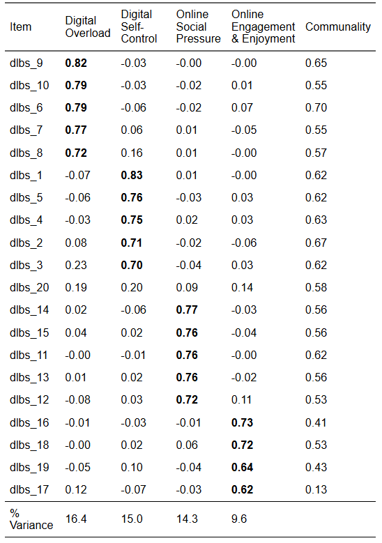

stars_data <- readr::read_csv(here::here("data/stars_mi_data.csv"))9 Measurement Invariance
9.1 Measurement Invariance (Week 9) Overview
Learning Objectives
By the end of this tutorial & workshop, students will be able to:
- Explain the purpose of measurement invariance (MI) and why it is essential for group comparisons
- Understand the statistical foundations of MI within the CFA/SEM framework
- Differentiate between levels of invariance — configural, metric, scalar, and strict
- Fit and compare multi-group CFA models in
lavaan - Evaluate invariance using changes in fit and parameter estimates
- Identify and address violations using partial invariance approaches
- Report MI analyses clearly and transparently
Structure
Section 1: Lecture
- Part 1: Understanding Measurement Invariance — what it is, levels, and logic
Section 2: Code Walkthrough
- Part 2: Testing Measurement Invariance — fitting and comparing models using
lavaan
Section 3: Worksheet
- Part 3: Exercises — apply invariance testing to the DLBS data
9.2 Introduction
Scale Development Process (Recap)
You may remember from previous weeks that developing a psychological scale is a multi-stage process that moves from theory to statistical testing and back again and that, generally speaking, it should follow these key phases:
Define the construct
Generate items
Collect data
Explore scale structure and remove problematic items (EFA)
Evaluate internal consistency of the factors (reliability analysis)
Collect new data (or split the EFA data and use the remaining portion)
Evaluate the factor structure suggested by EFA using confirmatory factor analysis (CFA)
Evaluate whether the scale measures the same construct in the same way across groups (measurement invariance; MI)
Collect new data (ideal, but rare in practice)
- Examine validity evidence (e.g., convergent/discriminant validity, criterion validity)
Ongoing validity and generalisabilty checks (also rare in practice)
- Evaluate and refine the scale across new samples, contexts, and time
This week, we’re going to learn how to evaluate whether the scale measures the same construct in the same way across groups using measurement invariance (MI).
9.3 Part 1: Understanding Measurement Invariance
Where This Fits in Scale Development
By this point, you’ve already done the heavy lifting of figuring out what your scale looks like and whether that structure holds up statistically.
In EFA, you asked: “What structure is in the data?”. You let the data speak, explored patterns, and identified a plausible factor structure.
In CFA, you tightened the screws and asked: “Does this structure hold?”. You specified a model based on theory (in this case, EFA) and tested whether it fits in a new dataset.
Now we move one step further and ask: “Does this structure hold equally across different groups?”
Up until now, you’ve only been asking whether your model works in general. Now you’re asking whether it works fairly.
This is measurement invariance — the final boss of the measurement model.
Why Measurement Invariance Matters
Let’s start with the uncomfortable truth:
You cannot meaningfully compare groups unless your measure behaves the same way across them.
That includes all the comparisons people love to make, such as:
Gender comparisons
Cultural comparisons
Year group comparisons
Intervention vs control
All of those hinge on a very strong assumption — usually untested — that the scale is operating equivalently across groups.
If that assumption is wrong, your conclusions are on shaky ground.
Without measurement invariance, differences in observed scores might reflect:
Different interpretations of items
Different response styles
Item bias
Or other measurement artefacts
…and not actual differences in the underlying construct. That is the slightly uncomfortable part.
Uncomfortable, because if we accept that and confront it, it have huge implications for our research.
You can have excellent global fit indices, strong factor loadings, and clean, interpretable factors, but still be comparing apples to something that looks like an apple but is psychologically an orange — that is, it is doing something completely different.
STARS Example
Let’s make this concrete using the STARS scale.
Imagine you want to compare statistics anxiety in two groups:
Group A: Neurotypical students
Group B: Neurodivergent students
You run your analysis and find neurodivergent students score higher on Interpretation Anxiety.
Most researchers would simply conclude that “neurodivergent students experience more statistics anxiety”. Nice. Clean. Publishable.
But… let’s slow that down for a second.
What if:
Some items are interpreted differently across groups (e.g., “interpreting a table” might tap different cognitive processes depending on how someone processes information)?
Certain items are more cognitively demanding for one group, independent of anxiety?
One group is more likely to use higher response categories, even at the same underlying level of anxiety?
Now ask yourself what that higher score is actually capturing?
It might not be more anxiety. It might be:
differences in processing style
differences in how items are understood
or systematic differences in how people respond to the scale
In other words, you are not necessarily comparing anxiety — you may be comparing how the measurement behaves across groups.
That’s the uncomfortable bit.
Without measurement invariance, you can’t tell whether observed group differences reflect real differences in the latent construct or differences in how the construct is being measured.
Measurement invariance is what lets you separate those two.
Without it, your interpretation is — at best — ambiguous, and at worst, just wrong.
The Core Idea
If we strip everything back, measurement invariance is asking:
Can we use the same measurement model to explain relationships between variables in different groups?
Because if we can’t, then:
the latent construct may not being measured in the same way
the scale may not operate equivalently
and group comparisons may be questionable
Exactly which of those are problems depends on the level of invariance.
Levels of Invariance
Measurement invariance isn’t tested in one go.
Instead, we take a stepwise approach, gradually increasing how strict we are about equality across groups.
Each step asks a slightly stronger question than the last.
Think of it like turning up the pressure on your model and seeing when it starts to crack.
1. Configural Invariance (Baseline Model)
At this stage, we are being deliberately relaxed.
Same factor structure across groups
No equality constraints
Everything (loadings, intercepts, residuals) is freely estimated
What are we testing?
Do the groups conceptualise the construct in the same basic way?
In practical terms:
Do the same items cluster together?
Does the same factor structure make sense in each group?
We are not saying anything about how strongly items relate to the factor yet — just that the overall pattern is the same.
If this fails, stop. Because if different groups don’t even share the same conceptual structure, then you are not measuring the same construct and everything else becomes meaningless.
2. Metric Invariance (Weak Invariance)
Now we start tightening things.
- Factor loadings are constrained to be equal across groups
What are we testing?
Do items relate to the latent construct in the same way across groups?
This is about scale units.
If an item is a strong indicator of the factor in one group, is it equally strong in another?
If metric invariance holds:
A one-unit change in the latent construct means the same thing across groups.
That unlocks something important:
✔ You can compare relationships involving the construct (e.g., correlations, regressions, path models)
Why? Because the scale of the latent variable is now comparable.
Without metric invariance, even a simple correlation difference could just reflect different measurement properties.
3. Scalar Invariance (Strong Invariance)
Now we add another layer of constraint:
- Factor loadings and intercepts (or thresholds for ordinal data) are equal
What are we testing?
Do groups interpret the response scale in the same way?
This is about scale origin.
Even if two people have the same level of the latent trait, do they:
endorse the same response category?
start from the same baseline?
If scalar invariance holds:
The “zero point” (or baseline) of the scale is aligned across groups.
This is the big one.
✔ You can now compare latent means
And here’s the slightly uncomfortable truth:
This is what most people think they’re doing when they compare group means — but usually without testing it.
Without scalar invariance, mean differences are ambiguous. They could reflect:
true differences in the construct
or systematic differences in how groups respond to items
4. Strict Invariance
Now we go all in:
- Loadings + intercepts + residual variances are equal
What are we testing?
Do items have the same measurement precision across groups?
Residuals capture:
measurement error
item-specific variance not explained by the factor
If strict invariance holds:
The scale is equally reliable across groups.
This allows:
✔ Comparison of observed scores (not just latent variables)
Reality Check
Strict invariance is:
Rarely achieved
Rarely necessary
If you demanded strict invariance for every study, you’d publish approximately nothing.
Most of the time:
Scalar invariance is enough for meaningful group comparisons
Everything beyond that is a bonus, not a requirement
Furthermore, when working with ordinal data using WLSMV, strict invariance is typically not tested. This is because residual variances are not freely estimated in the same way as in continuous models, meaning there are no additional parameters to constrain across groups. As a result, scalar invariance is usually considered the highest level of invariance assessed.
Partial Invariance
Full invariance is the textbook ideal. Partial invariance is the reality.
Partial invariance means that some parameters differ across groups, but enough are equal to still support meaningful comparisons
For example:
Most loadings are equal, but one item behaves differently
Most thresholds are equal, but one item is systematically endorsed differently
In practice, you:
Identify non-invariant parameters
Relax those specific constraints
Re-fit the model
The key idea:
You don’t throw the whole model out because of one problematic item.
How This Links to CFA
This is not a new model. This is just CFA, repeated across groups, with constraints added.
So, everything you learned in the CFA section — especially:
model specification
covariance reproduction
parameter interpretation
…still applies here.
Measurement invariance just forces you to confront a harder question:
Not just “Does the model fit?” but “Does the model fit in the same way across groups?”
Statistical Foundations
You’ve already met the core idea behind CFA.
To recap:
We are trying to explain the covariance matrix of the observed variables using a smaller number of latent factors.
In other words, CFA is not modelling raw scores — it is modelling relationships between variables.
Formally, this is done using the common factor model, which — as we’ve seen previously — generates the model-implied covariance matrix by combining the matrix of factor loadings (how items relate to factors), the covariance matrix of the latent factors (how factors relate to each other), and residual variance.
Common Factor Model Equation
The model-implied covariance matrix is:
\[ \boldsymbol{\Sigma} = \boldsymbol{\Lambda} \boldsymbol{\Phi} \boldsymbol{\Lambda}^{\top} + \boldsymbol{\Theta} \]
Where:
\(\boldsymbol{\Sigma}\) = model-implied covariance matrix (what the model predicts)
\(\boldsymbol{\Lambda}\) = matrix of factor loadings (how strongly items relate to factors)
\(\boldsymbol{\Phi}\) = covariance matrix of the latent factors
\(\boldsymbol{\Theta}\) = residual (error/unique variance) covariance matrix
In other words, it is asking:
Can this combination of loadings, factor relationships, and residuals reproduce the covariance structure we observe in the data?
If yes → the model fits (well enough).
If no → something about the model (or theory) is off.
Measurement Invariance Extends This Idea
Measurement invariance takes this exact logic and raises the stakes.
Instead of asking whether one model fits one dataset, we now ask:
Can the same model operate equivalently across multiple groups?
This is a subtle but crucial shift. We are no longer just interested in fit. We are interested in comparability.
The Multi-Group Extension
In measurement invariance, we estimate the model separately for each group, which gives us a group-specific covariance structure.
That is, for each group, we model the observed covariance matrix using that group’s matrix of factor loadings (how items relate to factors), the covariance matrix of the latent factors (how the factors relate to each other), and a residual covariance matrix capturing variance the model does not explain.
Every group is allowed to have its own CFA model.
Group-Specific Covariance Matrix Equation
\[ \boldsymbol{\Sigma}_g = \boldsymbol{\Lambda}_g \boldsymbol{\Phi}_g \boldsymbol{\Lambda}_g^{\top} + \boldsymbol{\Theta}_g \]
Where:
\(g\) = group index (e.g., neurotypical vs neurodivergent students)
\(\boldsymbol{\Sigma}_g\) = observed covariance matrix for group \(g\)
\(\boldsymbol{\Lambda}_g\) = matrix of factor loadings for group \(g\)
\(\boldsymbol{\Phi}_g\) = covariance matrix of the latent factors for group \(g\)
\(\boldsymbol{\Theta}_g\) = residual covariance matrix for group \(g\)
However, if all parameters are freely estimated across groups, we are not testing invariance — we are just fitting separate CFAs.
In this situation, each group has its own set of factor loadings, intercepts, and residuals, meaning the model is allowed to operate differently in each group. Although the same overall structure is specified, the actual parameter values can vary freely.
As a result, all we’d learn is that the model fits reasonably well within each group on its own, and that is not the same as showing the model is equivalent across groups…
What Measurement Invariance Actually Tests
To test measurement invariance, we impose equality constraints on key parts of the model and examine whether the model still fits the data well.
This is what allows us to determine whether the measurement model is operating in the same way across groups, rather than simply fitting each group independently.
Instead of letting everything vary freely, we start asking a more demanding question:
What happens if we force certain aspects of the model to be the same across groups?
For example:
Do items relate to the construct in the same way across groups?
Do groups interpret the response scale in the same way?
Do items have the same amount of measurement error?
Each of these corresponds to a different part of the model that we can choose to constrain to be equal.
The logic is simple but powerful:
If adding these constraints does not substantially worsen model fit → the model is operating equivalently across groups
If model fit does worsen → something about the measurement differs across groups
So, step by step, we move from a model where each group is estimated independently, towards models where more and more aspects of the measurement process are shared across groups.
9.4 The Key Question
At its core, measurement invariance comes down to a practical decision:
What needs to be different across groups, and what can we reasonably assume is the same?
In a multi-group CFA, we are fitting the same overall model to multiple groups. The crucial choice is:
Do we allow each group to have its own version of the model?
Or do we require parts of the model to be shared across groups?
More specifically:
Do we need different factor loadings (do items relate to the construct in the same way)?
Do we need different intercepts or thresholds (do groups use the response scale in the same way)?
Do we need different residual variances (is measurement error the same)?
Or:
Can we constrain these to be equal without breaking the model?
If we can, that tells us something important:
The scale is operating equivalently across groups.
Measurement Invariance Testing Equations
We start with a model where everything is freely estimated across groups:
\[ \boldsymbol{\Sigma}_g = \boldsymbol{\Lambda}_g \boldsymbol{\Phi}_g \boldsymbol{\Lambda}_g^{\top} + \boldsymbol{\Theta}_g \]
Here, each group has its own:
factor loadings (\(\boldsymbol{\Lambda}_g\))
covariance matrix of the latent factors (\(\boldsymbol{\Phi}_g\))
residual covariance matrix (\(\boldsymbol{\Theta}_g\))
This is just separate CFAs for each group.
Adding Constraints (Example: Metric Invariance)
We then begin constraining parameters across groups.
For example, if we constrain the factor loadings to be equal:
\[ \boldsymbol{\Sigma}_g = \boldsymbol{\Lambda} \boldsymbol{\Phi}_g \boldsymbol{\Lambda}^{\top} + \boldsymbol{\Theta}_g \]
Now:
Factor loadings are the same across groups (\(\boldsymbol{\Lambda}\))
Factor covariances (\(\boldsymbol{\Phi}_g\)) and residuals (\(\boldsymbol{\Theta}_g\)) can still vary
Note: The model equation itself does not fundamentally change across levels of invariance. What changes is whether parameters carry a group-specific subscript (e.g., \(\boldsymbol{\Lambda}_g\)), meaning they are freely estimated in each group, or no subscript (e.g., \(\boldsymbol{\Lambda}\)), meaning they are constrained to be equal across groups. In other words, we are always fitting the same model — we are simply restricting how similar it must be across groups.
Going Further (Example: Scalar Invariance)
If we also constrain intercepts (not shown in covariance form), we further restrict how the model operates across groups.
At each step:
We are testing whether the same parameter values can explain the covariance structure in all groups.
The Key Idea
Measurement invariance is tested by comparing:
A model where parameters are free across groups
A model where some parameters are constrained to be equal
If model fit does not meaningfully worsen:
The constrained parameters are invariant across groups.
The Logic of Testing
We fit models sequentially:
Configural
Metric
Scalar
And compare them.
We’re not asking:
“Is the model perfect?”
We’re asking:
“Does adding constraints make things meaningfully worse?”
How Do We Decide?
You could use chi-square difference tests.
But with large samples (like STARS), they will almost always say:
❌ “Everything is significantly worse”
So instead, we look at changes in fit indices:
ΔCFI ≤ .01
ΔRMSEA ≤ .015
ΔSRMR ≤ .030 (metric), ≤ .015 (scalar)
These are rules of thumb — not commandments.
What Changes with Ordinal Data?
Use WLSMV
Intercepts are replaced by thresholds
If thresholds differ then groups use response categories differently
So, the same observed score ≠ same latent trait
Assumptions & Data Requirements
Same as CFA
Correct model
Independent observations
Adequate sample size
Meaningful covariances
Additional for MI
Sufficient N per group
Comparable group distributions
Same response scale functioning
9.5 Part 2: Testing Measurement Invariance in R
Process Overview
This mirrors CFA — just with more constraints.
Step 0: Pre-Analysis Checks
Everything from CFA still applies, plus:
Adequate sample size per group
Reasonable group balance
Same model fits within each group
Step 1: Fit Baseline CFA
- Check baseline CFA model is a good fit (otherwise MI is pointless)
Step 2: Fit Configural Model
Step 3: Add Constraints Sequentially
Metric
Scalar
Strict (optional)
Step 4: Compare Models
Fit index changes
Parameter changes
- Substantive interpretation
Step 5: Report
In-text
Tables
The Statistics Anxiety Rating Scale (STARS)
Let’s go through each of these steps using the same STARS data and CFA model from CFA week (refer back to that if you want a reminder of the measurement model).
This time our research question is:
Does the STARS measures the same construct in the same way in the original English vs. the non-English versions?
(IRL, we’d usually want to look at this language-by-language, but we’re collapsing languages for educational reasons.)
Step 0: Pre-Analysis Checks
Before testing measurement invariance, all the usual CFA pre-analysis checks still apply (we won’t revisit them again now though). However, because we are now working with multiple groups, there are a few additional requirements to consider.
Adequate Sample Size Per Group
It’s not enough for the total sample to be large — each group must have sufficient cases to estimate the model reliably. A model that works well overall can break down within smaller subgroups.
There is no universal minimum sample size per group for measurement invariance testing. However, some practical guidelines are useful:
~100–200 per group → Often adequate for simple, well-behaved models (few factors, strong loadings)
~200–500 per group → Safer for most applied CFA/MI work
500+ per group → Preferred for ordinal data with WLSMV or more complex models
That said, these are rules of thumb, not guarantees. See the call-out below for more information.
How Large Should Each Group Be?
There is no universal minimum sample size per group for measurement invariance testing. Required sample size depends on:
Model complexity (number of factors, items, and parameters)
Strength of factor loadings (stronger loadings need fewer cases)
Estimator used (e.g., WLSMV typically needs larger samples than Maximum Likelihood)
However, some practical guidelines are useful:
~100–200 per group → Often adequate for simple, well-behaved models (few factors, strong loadings)
~200–500 per group → Safer for most applied CFA/MI work
500+ per group → Preferred for ordinal data with WLSMV or more complex models
That said, these are rules of thumb, not guarantees.
A better way to think about it is:
Do I have enough data in each group for the model to converge, produce stable estimates, and show acceptable fit?
Rather than relying on fixed cut-offs, you should:
Fit the model separately in each group
Does it converge?
Are the loadings sensible (e.g., not tiny, not > 1)?
Are standard errors reasonable?
Check model fit within each group
- If the model fits well in large groups but poorly in small ones, that’s a red flag for sample size issues.
Watch for warning signs of too-small samples
Non-convergence
Heywood cases (negative variances)
Huge standard errors
Unstable fit indices
Reasonable Group Balance
Extremely unequal group sizes can cause problems for estimation and model comparison. Invariance testing relies on comparing model fit across groups, so if one group dominates the sample, results may be misleading or unstable.
There is no strict rule for acceptable group balance, but a useful way to think about this is in terms of ratios between groups:
Up to ~2:1 → Generally fine
Around 3:1–5:1 → Usually acceptable, but proceed with caution
> 5:1–10:1 → Potentially problematic
Extreme imbalance (e.g., 10:1+) → Likely to distort results
See the call-out below for more information.
How Imbalanced is Too Imbalanced?
What you’re really asking is: “When does imbalance start to meaningfully distort estimation and comparisons?”.
The honest answer is: when it starts breaking things!
There is no strict rule for acceptable group balance, but a useful way to think about this is in terms of ratios between groups:
Up to ~2:1 → Generally fine
Around 3:1–5:1 → Usually acceptable, but proceed with caution
> 5:1–10:1 → Potentially problematic
Extreme imbalance (e.g., 10:1+) → Likely to distort results
Why Does Imbalance Matter?
In multi-group CFA, the model is estimated simultaneously across groups, but:
Larger groups contribute more information
Fit indices and parameter estimates are dominated by the largest group
Smaller groups can become statistically “invisible”
This creates a situation where:
The model can appear to fit well overall, even if it fits poorly in the smaller group.
Even worse, invariance decisions (ΔCFI, ΔRMSEA, etc.) may reflect the large group almost entirely, masking meaningful differences.
How Do You Actually Diagnose a Problem?
Don’t rely on ratios alone — check behaviour:
Fit the model separately in each group
- Does the small group show worse fit or instability?
Compare parameter estimates across groups
Are loadings wildly different in the smaller group?
Are standard errors much larger?
Look for instability in the smaller group
Non-convergence
Large SEs
Odd estimates (e.g., near-zero or inflated loadings)
The Same Model Fits Within Each Group
Before testing invariance, you need evidence that the basic measurement model is plausible in each group separately. This is typically done by fitting the model independently within each group and checking model fit and parameter estimates.
If the model fits poorly in one group, invariance testing becomes meaningless — you are effectively comparing a well-fitting model to a poorly fitting one.
In this situation, lack of invariance may reflect model misspecification in one group, rather than genuine differences in how the construct operates across groups.
In practice, you should check:
Model fit within each group (e.g., CFI/TLI, RMSEA, SRMR)
Factor loadings (are they reasonably strong and in the expected direction?)
Any estimation problems (e.g., non-convergence, large standard errors, negative variances)
If the model does not fit adequately in all groups, you should revise the measurement model before proceeding — not attempt to “fix” the problem through invariance testing.
🤔 Does our data pass the pre-analysis sample size & ratio checks?
Let’s address the group sample size and ratio first.
First, we need to read in the data (I’ve already removed the stars_help_1 item that we previously dropped as it was redundant).
Then, to get our group sample size, we need to count how many participants are in each group.
We can do that with a quick count:
stars_data |> dplyr::count(language)# A tibble: 2 × 2
language n
<chr> <int>
1 English 3649
2 Non-English 3236Then we need to calculate the ratio.
Essentially, we just need to divide the number in the English language group by the number in the non-English language group.
We can do that with the following code:
stars_data |>
dplyr::count(language) |>
dplyr::summarise(
ratio = n[language == "English"] / n[language == "Non-English"]
)# A tibble: 1 × 1
ratio
<dbl>
1 1.13
Solution
✔️ Our group sample sizes are very large
✔️ Our group sample size ration is 1.13:1, which is pretty good
🤔 Does our data pass the pre-analysis individual group model fit checks?
To check this, we need to specify the measurement model and then run the CFA in each group using split samples.
(This is very similar to what we did last week and to the next step [configural invariance], so we won’t complete all these steps in the workshop, but the detail is here for future reference and is an excuse to show you some more advanced R code.)
Specify the measurement model:
stars_model <- '
interpret =~ stars_int_3 + stars_int_11 + stars_int_1 +
stars_int_6 + stars_int_5 + stars_int_2
test =~ stars_test_3 + stars_test_6 + stars_test_4 +
stars_test_1 + stars_test_8
help =~ stars_help_2 + stars_help_3 + stars_help_4
'Split the sample and fit the CFA models:
There are various ways to do this, but I’ve opted to show you an efficient and reproducible solution that uses more advanced code than what you’ll have encountered on the course so far. Probably.
This code fits the same CFA model separately within each group by filtering the dataset, estimating the model independently, and storing the results in a named list for comparison.
1item_vars <- c(
"stars_int_3", "stars_int_11", "stars_int_1",
"stars_int_6", "stars_int_5", "stars_int_2",
"stars_test_3", "stars_test_6", "stars_test_4",
"stars_test_1", "stars_test_8",
"stars_help_2", "stars_help_3", "stars_help_4"
)
2groups <- unique(stars_data$language)
3fits <- purrr::map(groups, ~ {
stars_grouped <- stars_data |>
4 dplyr::filter(language == .x) |>
5 dplyr::select(dplyr::all_of(item_vars))
6 lavaan::cfa(
model = stars_model,
data = stars_grouped,
estimator = "WLSMV",
ordered = item_vars
)
}) |>
7 rlang::set_names(groups)- 1
- Defines a character vector of item variable names to be used in the CFA.
- 2
-
Extracts the unique group labels (i.e.,
"English","Non-English") which we will use to loop over each group separately - 3
-
Applies a function that loops over each group in
groups—.xrepresents the current group value (e.g.,"English");map()will return a list of fitted models (one per group) - 4
- Filters the dataset to only include one group at a time (e.g., only English participants)
- 5
-
Keeps only the scale items used in the CFA (as listed in
item_vars) to prevent grouping variables or other columns from entering the model - 6
- Fits our CFA model (as per CFA week)
- 7
-
Assigns names to each model in the list to make the output easier to interpret (e.g.,
"English","Non-English"instead of[[1]],[[2]])
Compare model fit for each group:
This code extracts key fit statistics from each group-specific CFA model and combines them into a single table, making it easy to compare how well the model fits in each group.
fit_summary <- fits |>
1 purrr::map_dfr(
2 ~ lavaan::fitMeasures(.x,
c("cfi", "tli", "rmsea", "srmr")
),
3 .id = "group"
)
fit_summary- 1
-
Applies a function to each model in the list and returns the results as a data frame (instead of a list);
_dfr= “map + bind rows” - 2
- Extracts the specified fit indices for each group
- 3
-
Adds a column called
"group"using the names of thefitslist (e.g.,"English","Non-English") to allow you to identify which row corresponds to which group
# A tibble: 2 × 5
group cfi tli rmsea srmr
<chr> <lvn.vctr> <lvn.vctr> <lvn.vctr> <lvn.vctr>
1 Non-English 0.9925286 0.9908122 0.07258030 0.05216827
2 English 0.9956694 0.9946746 0.05801045 0.03935945
Solution
Is model fit acceptable within each group?
✔️ The model (hypothesised factor structure) fits well in both groups
However…
Non-English fits slightly better
English fits slightly worse
But the differences are small:
ΔCFI ≈ .003 → trivial
ΔRMSEA ≈ .015 → noticeable but not dramatic
This could be due to:
Sampling variation (e.g., one group might be more heterogeneous, noisier, or a little less consistent in responses)
Model misspecification (e.g., one group may have one item behaving different,a residual correlation exists in one group only, a loading is weaker)
Non-invariance (but this is a flag, not a diagnosis — we need model constraints for that)
Compare factor loadings for each group:
This code extracts the factor loadings from each group-specific CFA model and combines them into a single table, allowing you to assess the strength and consistency of item–factor relationships across groups.
loadings <- fits |>
1 purrr::map_dfr(
2 ~ lavaan::parameterEstimates(.x, standardized = TRUE) |>
3 dplyr::filter(op == "=~") |>
4 dplyr::select(lhs, rhs, est, std.all),
5 .id = "group"
)
loadings- 1
-
Applies a function to each model and combines the results into a single data frame;
_dfr= map + bind rows - 2
-
Extracts all parameter estimates from each model —
standardized = TRUEadds standardised estimates (std.all; these are easier to interpret than raw (unstandardised) values) - 3
-
Keeps only factor loadings (
=~indicates relationships between latent variables and their indicators) - 4
-
Keeps only relevant columns —
lhs: latent factor,rhs: observed item,est: unstandardised loading,std.all: standardised loading - 5
-
Adds a column identifying the group for each row usingthe names from the
fitslist
group lhs rhs est std.all
1 Non-English interpret stars_int_3 1.000 0.837
2 Non-English interpret stars_int_11 1.043 0.873
3 Non-English interpret stars_int_1 1.019 0.853
4 Non-English interpret stars_int_6 0.964 0.807
5 Non-English interpret stars_int_5 0.752 0.630
6 Non-English interpret stars_int_2 0.899 0.752
7 Non-English test stars_test_3 1.000 0.895
8 Non-English test stars_test_6 0.912 0.816
9 Non-English test stars_test_4 0.919 0.823
10 Non-English test stars_test_1 0.949 0.849
11 Non-English test stars_test_8 0.778 0.696
12 Non-English help stars_help_2 1.000 0.833
13 Non-English help stars_help_3 1.053 0.877
14 Non-English help stars_help_4 0.993 0.827
15 English interpret stars_int_3 1.000 0.838
16 English interpret stars_int_11 1.015 0.851
17 English interpret stars_int_1 1.011 0.847
18 English interpret stars_int_6 0.949 0.795
19 English interpret stars_int_5 0.711 0.596
20 English interpret stars_int_2 0.953 0.799
21 English test stars_test_3 1.000 0.878
22 English test stars_test_6 0.956 0.840
23 English test stars_test_4 0.952 0.836
24 English test stars_test_1 0.969 0.851
25 English test stars_test_8 0.766 0.673
26 English help stars_help_2 1.000 0.849
27 English help stars_help_3 1.067 0.906
28 English help stars_help_4 1.017 0.863
Solution
Are factor loadings reasonably strong and in the expected direction within each group?
✔️ Yes - quite clearly
Across both groups:
Most loadings are .75–.90 → strong
A few are around .60–.70 → very acceptable but weaker
Meaning:
Items are clearly related to their factors
Each factor is well-defined by its indicators
Check for estimation issues in each group:
This code checks for common estimation problems (e.g., negative variances, unstable estimates) in each group-specific model, helping ensure that the results can be trusted before proceeding to invariance testing.
If the resulting table isn’t empty, something’s off — don’t just ignore it and carry on.
1issues <- fits |>
2 purrr::map_dfr(
3 ~ lavaan::parameterEstimates(.x) |>
4 dplyr::filter(
5 est < 0 & op == "~~" |
6 se > 10 |
7 abs(est) > 10
),
8 .id = "group"
)
issues- 1
-
Starts with the list of fitted CFA models (
fits); each model corresponds to a different group - 2
-
Applies a function to each model and combines results into a single data frame;
_dfr= map + bind rows - 3
- Extracts all parameter estimates from each model (includes loadings, variances, covariances, thresholds, etc.)
- 4
- Filters the output
- 5
-
Flags negative variances (Heywood cases);
~~refers to variances/covariances - 6
- Flags very large standard errors
- 7
- Flags implausibly large parameter estimates
- 8
- Adds a column identifying which group the issue comes from (helps pinpoint group-specific estimation problems)
[1] group lhs op rhs est se z pvalue
[9] ci.lower ci.upper
<0 rows> (or 0-length row.names)
Solution
✔️ There are no convergence issues, warnings, or Heywood cases
Step 1: Configural Model
The key question at this stage is whether the model fits reasonably well in both groups.
Configural invariance assesses whether the same factor structure can be estimated across groups, but it does not guarantee that the model fits adequately within each group. For this reason, it is important to first fit the model separately in each group, as we did above. This ensures that you are comparing meaningful, well-fitting models rather than masking problems in one group with acceptable overall fit.
To evaluate this, we run separate CFA models for each group using the same model specification, with all parameters freely estimated. We then examine model fit indices, the pattern and strength of factor loadings, R² values, and any estimation warnings or anomalies.
If the results show broadly similar patterns across groups, this supports the assumption that the model is appropriate for both. However, if the groups display substantially different patterns or clear signs of misfit in one group, this suggests a deeper problem with the measurement model. In such cases, invariance testing should not proceed until the model has been revised.
Convert our grouping variable to a factor:
This ensures lavaan treats it as a grouping variable rather than numeric or character (required for multi-group CFA):
stars_data <- stars_data |>
dplyr::mutate(language = forcats::as_factor(language))Fit the configural invariance model:
Then fit a configural invariance model, testing whether the same factor structure holds across groups without imposing any equality constraints (yet).
fit_configural <- lavaan::cfa(
model = stars_model,
data = stars_data,
1 group = "language",
estimator = "WLSMV",
ordered = item_vars
)
lavaan::summary(fit_configural, fit.measures = TRUE, standardized = TRUE)- 1
-
Tells
lavaanto fit a multi-group model based on thelanguagevariable (all the other code is the same as our previous CFAs)
lavaan 0.6-19 ended normally after 42 iterations
Estimator DWLS
Optimization method NLMINB
Number of model parameters 146
Number of observations per group: Used Total
Non-English 3227 3236
English 3641 3649
Model Test User Model:
Standard Scaled
Test Statistic 2312.028 3840.784
Degrees of freedom 148 148
P-value (Chi-square) 0.000 0.000
Scaling correction factor 0.608
Shift parameter 35.883
simple second-order correction
Test statistic for each group:
Non-English 2208.230 2208.230
English 1632.554 1632.554
Model Test Baseline Model:
Test statistic 377816.121 138627.992
Degrees of freedom 182 182
P-value 0.000 0.000
Scaling correction factor 2.728
User Model versus Baseline Model:
Comparative Fit Index (CFI) 0.994 0.973
Tucker-Lewis Index (TLI) 0.993 0.967
Robust Comparative Fit Index (CFI) 0.952
Robust Tucker-Lewis Index (TLI) 0.941
Root Mean Square Error of Approximation:
RMSEA 0.065 0.085
90 Percent confidence interval - lower 0.063 0.083
90 Percent confidence interval - upper 0.068 0.088
P-value H_0: RMSEA <= 0.050 0.000 0.000
P-value H_0: RMSEA >= 0.080 0.000 1.000
Robust RMSEA 0.080
90 Percent confidence interval - lower 0.077
90 Percent confidence interval - upper 0.083
P-value H_0: Robust RMSEA <= 0.050 0.000
P-value H_0: Robust RMSEA >= 0.080 0.572
Standardized Root Mean Square Residual:
SRMR 0.045 0.045
Parameter Estimates:
Parameterization Delta
Standard errors Robust.sem
Information Expected
Information saturated (h1) model Unstructured
Group 1 [Non-English]:
Latent Variables:
Estimate Std.Err z-value P(>|z|) Std.lv Std.all
interpret =~
stars_int_3 1.000 0.837 0.837
stars_int_11 1.043 0.010 104.649 0.000 0.873 0.873
stars_int_1 1.019 0.010 106.379 0.000 0.853 0.853
stars_int_6 0.964 0.011 86.770 0.000 0.807 0.807
stars_int_5 0.752 0.016 45.719 0.000 0.630 0.630
stars_int_2 0.899 0.012 73.586 0.000 0.752 0.752
test =~
stars_test_3 1.000 0.895 0.895
stars_test_6 0.912 0.010 93.985 0.000 0.816 0.816
stars_test_4 0.919 0.010 92.200 0.000 0.823 0.823
stars_test_1 0.949 0.010 98.645 0.000 0.849 0.849
stars_test_8 0.778 0.014 56.250 0.000 0.696 0.696
help =~
stars_help_2 1.000 0.833 0.833
stars_help_3 1.053 0.014 72.986 0.000 0.877 0.877
stars_help_4 0.993 0.014 71.738 0.000 0.827 0.827
Covariances:
Estimate Std.Err z-value P(>|z|) Std.lv Std.all
interpret ~~
test 0.488 0.011 43.236 0.000 0.651 0.651
help 0.443 0.012 37.956 0.000 0.635 0.635
test ~~
help 0.445 0.012 36.300 0.000 0.597 0.597
Thresholds:
Estimate Std.Err z-value P(>|z|) Std.lv Std.all
stars_int_3|t1 -0.368 0.023 -16.278 0.000 -0.368 -0.368
stars_int_3|t2 0.320 0.022 14.250 0.000 0.320 0.320
stars_int_3|t3 0.966 0.026 36.803 0.000 0.966 0.966
stars_int_3|t4 1.730 0.039 43.854 0.000 1.730 1.730
stars_nt_11|t1 -0.708 0.024 -29.251 0.000 -0.708 -0.708
stars_nt_11|t2 0.038 0.022 1.742 0.081 0.038 0.038
stars_nt_11|t3 0.703 0.024 29.083 0.000 0.703 0.703
stars_nt_11|t4 1.476 0.033 44.110 0.000 1.476 1.476
stars_int_1|t1 -0.707 0.024 -29.217 0.000 -0.707 -0.707
stars_int_1|t2 0.010 0.022 0.440 0.660 0.010 0.010
stars_int_1|t3 0.725 0.024 29.820 0.000 0.725 0.725
stars_int_1|t4 1.478 0.033 44.119 0.000 1.478 1.478
stars_int_6|t1 -0.770 0.025 -31.282 0.000 -0.770 -0.770
stars_int_6|t2 0.004 0.022 0.194 0.846 0.004 0.004
stars_int_6|t3 0.716 0.024 29.519 0.000 0.716 0.716
stars_int_6|t4 1.528 0.035 44.261 0.000 1.528 1.528
stars_int_5|t1 0.240 0.022 10.779 0.000 0.240 0.240
stars_int_5|t2 0.878 0.025 34.496 0.000 0.878 0.878
stars_int_5|t3 1.410 0.032 43.763 0.000 1.410 1.410
stars_int_5|t4 1.938 0.046 41.957 0.000 1.938 1.938
stars_int_2|t1 -0.815 0.025 -32.660 0.000 -0.815 -0.815
stars_int_2|t2 -0.027 0.022 -1.214 0.225 -0.027 -0.027
stars_int_2|t3 0.773 0.025 31.381 0.000 0.773 0.773
stars_int_2|t4 1.611 0.036 44.279 0.000 1.611 1.611
stars_tst_3|t1 -1.858 0.043 -42.848 0.000 -1.858 -1.858
stars_tst_3|t2 -1.127 0.028 -40.257 0.000 -1.127 -1.127
stars_tst_3|t3 -0.521 0.023 -22.464 0.000 -0.521 -0.521
stars_tst_3|t4 0.219 0.022 9.832 0.000 0.219 0.219
stars_tst_6|t1 -1.480 0.034 -44.127 0.000 -1.480 -1.480
stars_tst_6|t2 -0.740 0.024 -30.320 0.000 -0.740 -0.740
stars_tst_6|t3 -0.182 0.022 -8.215 0.000 -0.182 -0.182
stars_tst_6|t4 0.497 0.023 21.531 0.000 0.497 0.497
stars_tst_4|t1 -1.487 0.034 -44.153 0.000 -1.487 -1.487
stars_tst_4|t2 -0.806 0.025 -32.399 0.000 -0.806 -0.806
stars_tst_4|t3 -0.246 0.022 -11.025 0.000 -0.246 -0.246
stars_tst_4|t4 0.499 0.023 21.600 0.000 0.499 0.499
stars_tst_1|t1 -1.193 0.029 -41.362 0.000 -1.193 -1.193
stars_tst_1|t2 -0.469 0.023 -20.422 0.000 -0.469 -0.469
stars_tst_1|t3 0.209 0.022 9.375 0.000 0.209 0.209
stars_tst_1|t4 1.008 0.027 37.795 0.000 1.008 1.008
stars_tst_8|t1 -0.785 0.025 -31.743 0.000 -0.785 -0.785
stars_tst_8|t2 -0.178 0.022 -8.040 0.000 -0.178 -0.178
stars_tst_8|t3 0.359 0.023 15.894 0.000 0.359 0.359
stars_tst_8|t4 1.027 0.027 38.237 0.000 1.027 1.027
stars_hlp_2|t1 -0.762 0.025 -31.017 0.000 -0.762 -0.762
stars_hlp_2|t2 -0.024 0.022 -1.109 0.267 -0.024 -0.024
stars_hlp_2|t3 0.566 0.023 24.186 0.000 0.566 0.566
stars_hlp_2|t4 1.278 0.030 42.533 0.000 1.278 1.278
stars_hlp_3|t1 -0.580 0.023 -24.701 0.000 -0.580 -0.580
stars_hlp_3|t2 0.168 0.022 7.583 0.000 0.168 0.168
stars_hlp_3|t3 0.794 0.025 32.039 0.000 0.794 0.794
stars_hlp_3|t4 1.575 0.036 44.303 0.000 1.575 1.575
stars_hlp_4|t1 -0.237 0.022 -10.639 0.000 -0.237 -0.237
stars_hlp_4|t2 0.572 0.023 24.427 0.000 0.572 0.572
stars_hlp_4|t3 1.210 0.029 41.629 0.000 1.210 1.210
stars_hlp_4|t4 1.927 0.046 42.080 0.000 1.927 1.927
Variances:
Estimate Std.Err z-value P(>|z|) Std.lv Std.all
.stars_int_3 0.299 0.299 0.299
.stars_int_11 0.237 0.237 0.237
.stars_int_1 0.273 0.273 0.273
.stars_int_6 0.349 0.349 0.349
.stars_int_5 0.603 0.603 0.603
.stars_int_2 0.434 0.434 0.434
.stars_test_3 0.199 0.199 0.199
.stars_test_6 0.334 0.334 0.334
.stars_test_4 0.323 0.323 0.323
.stars_test_1 0.280 0.280 0.280
.stars_test_8 0.515 0.515 0.515
.stars_help_2 0.305 0.305 0.305
.stars_help_3 0.230 0.230 0.230
.stars_help_4 0.315 0.315 0.315
interpret 0.701 0.011 61.703 0.000 1.000 1.000
test 0.801 0.011 74.073 0.000 1.000 1.000
help 0.695 0.013 51.611 0.000 1.000 1.000
Group 2 [English]:
Latent Variables:
Estimate Std.Err z-value P(>|z|) Std.lv Std.all
interpret =~
stars_int_3 1.000 0.838 0.838
stars_int_11 1.015 0.009 111.755 0.000 0.851 0.851
stars_int_1 1.011 0.009 111.297 0.000 0.847 0.847
stars_int_6 0.949 0.010 92.954 0.000 0.795 0.795
stars_int_5 0.711 0.015 46.829 0.000 0.596 0.596
stars_int_2 0.953 0.010 92.724 0.000 0.799 0.799
test =~
stars_test_3 1.000 0.878 0.878
stars_test_6 0.956 0.010 99.683 0.000 0.840 0.840
stars_test_4 0.952 0.009 101.263 0.000 0.836 0.836
stars_test_1 0.969 0.009 104.149 0.000 0.851 0.851
stars_test_8 0.766 0.013 60.328 0.000 0.673 0.673
help =~
stars_help_2 1.000 0.849 0.849
stars_help_3 1.067 0.011 99.214 0.000 0.906 0.906
stars_help_4 1.017 0.011 96.624 0.000 0.863 0.863
Covariances:
Estimate Std.Err z-value P(>|z|) Std.lv Std.all
interpret ~~
test 0.487 0.011 46.356 0.000 0.662 0.662
help 0.439 0.011 41.307 0.000 0.617 0.617
test ~~
help 0.450 0.011 39.778 0.000 0.604 0.604
Thresholds:
Estimate Std.Err z-value P(>|z|) Std.lv Std.all
stars_int_3|t1 -0.756 0.023 -32.740 0.000 -0.756 -0.756
stars_int_3|t2 0.071 0.021 3.397 0.001 0.071 0.071
stars_int_3|t3 0.802 0.023 34.291 0.000 0.802 0.802
stars_int_3|t4 1.535 0.033 47.027 0.000 1.535 1.535
stars_nt_11|t1 -1.063 0.026 -41.430 0.000 -1.063 -1.063
stars_nt_11|t2 -0.238 0.021 -11.340 0.000 -0.238 -0.238
stars_nt_11|t3 0.434 0.022 20.197 0.000 0.434 0.434
stars_nt_11|t4 1.171 0.027 43.565 0.000 1.171 1.171
stars_int_1|t1 -0.986 0.025 -39.609 0.000 -0.986 -0.986
stars_int_1|t2 -0.148 0.021 -7.073 0.000 -0.148 -0.148
stars_int_1|t3 0.529 0.022 24.209 0.000 0.529 0.529
stars_int_1|t4 1.271 0.028 45.093 0.000 1.271 1.271
stars_int_6|t1 -0.972 0.025 -39.240 0.000 -0.972 -0.972
stars_int_6|t2 -0.136 0.021 -6.543 0.000 -0.136 -0.136
stars_int_6|t3 0.545 0.022 24.858 0.000 0.545 0.545
stars_int_6|t4 1.279 0.028 45.193 0.000 1.279 1.279
stars_int_5|t1 -0.171 0.021 -8.165 0.000 -0.171 -0.171
stars_int_5|t2 0.493 0.022 22.680 0.000 0.493 0.493
stars_int_5|t3 1.094 0.026 42.090 0.000 1.094 1.094
stars_int_5|t4 1.719 0.037 46.648 0.000 1.719 1.719
stars_int_2|t1 -1.053 0.026 -41.215 0.000 -1.053 -1.053
stars_int_2|t2 -0.203 0.021 -9.720 0.000 -0.203 -0.203
stars_int_2|t3 0.483 0.022 22.289 0.000 0.483 0.483
stars_int_2|t4 1.320 0.029 45.686 0.000 1.320 1.320
stars_tst_3|t1 -2.070 0.049 -42.583 0.000 -2.070 -2.070
stars_tst_3|t2 -1.286 0.028 -45.292 0.000 -1.286 -1.286
stars_tst_3|t3 -0.617 0.022 -27.698 0.000 -0.617 -0.617
stars_tst_3|t4 0.191 0.021 9.125 0.000 0.191 0.191
stars_tst_6|t1 -1.817 0.040 -45.915 0.000 -1.817 -1.817
stars_tst_6|t2 -1.043 0.025 -40.971 0.000 -1.043 -1.043
stars_tst_6|t3 -0.430 0.021 -20.000 0.000 -0.430 -0.430
stars_tst_6|t4 0.327 0.021 15.432 0.000 0.327 0.327
stars_tst_4|t1 -1.817 0.040 -45.915 0.000 -1.817 -1.817
stars_tst_4|t2 -1.105 0.026 -42.323 0.000 -1.105 -1.105
stars_tst_4|t3 -0.521 0.022 -23.852 0.000 -0.521 -0.521
stars_tst_4|t4 0.238 0.021 11.340 0.000 0.238 0.238
stars_tst_1|t1 -1.513 0.032 -46.981 0.000 -1.513 -1.513
stars_tst_1|t2 -0.696 0.023 -30.633 0.000 -0.696 -0.696
stars_tst_1|t3 -0.009 0.021 -0.414 0.679 -0.009 -0.009
stars_tst_1|t4 0.789 0.023 33.859 0.000 0.789 0.789
stars_tst_8|t1 -1.210 0.027 -44.215 0.000 -1.210 -1.210
stars_tst_8|t2 -0.465 0.022 -21.505 0.000 -0.465 -0.465
stars_tst_8|t3 0.149 0.021 7.139 0.000 0.149 0.149
stars_tst_8|t4 0.882 0.024 36.751 0.000 0.882 0.882
stars_hlp_2|t1 -0.949 0.025 -38.636 0.000 -0.949 -0.949
stars_hlp_2|t2 -0.195 0.021 -9.323 0.000 -0.195 -0.195
stars_hlp_2|t3 0.365 0.021 17.144 0.000 0.365 0.365
stars_hlp_2|t4 1.069 0.026 41.563 0.000 1.069 1.069
stars_hlp_3|t1 -0.981 0.025 -39.468 0.000 -0.981 -0.981
stars_hlp_3|t2 -0.184 0.021 -8.794 0.000 -0.184 -0.184
stars_hlp_3|t3 0.409 0.021 19.115 0.000 0.409 0.409
stars_hlp_3|t4 1.144 0.027 43.079 0.000 1.144 1.144
stars_hlp_4|t1 -0.773 0.023 -33.332 0.000 -0.773 -0.773
stars_hlp_4|t2 0.075 0.021 3.629 0.000 0.075 0.075
stars_hlp_4|t3 0.692 0.023 30.506 0.000 0.692 0.692
stars_hlp_4|t4 1.407 0.030 46.470 0.000 1.407 1.407
Variances:
Estimate Std.Err z-value P(>|z|) Std.lv Std.all
.stars_int_3 0.298 0.298 0.298
.stars_int_11 0.277 0.277 0.277
.stars_int_1 0.282 0.282 0.282
.stars_int_6 0.367 0.367 0.367
.stars_int_5 0.645 0.645 0.645
.stars_int_2 0.362 0.362 0.362
.stars_test_3 0.229 0.229 0.229
.stars_test_6 0.295 0.295 0.295
.stars_test_4 0.302 0.302 0.302
.stars_test_1 0.275 0.275 0.275
.stars_test_8 0.548 0.548 0.548
.stars_help_2 0.280 0.280 0.280
.stars_help_3 0.179 0.179 0.179
.stars_help_4 0.255 0.255 0.255
interpret 0.702 0.010 69.268 0.000 1.000 1.000
test 0.771 0.010 73.893 0.000 1.000 1.000
help 0.720 0.011 63.576 0.000 1.000 1.000🤔 Does the model fit reasonably well in both groups?
Solution
✔️ The configural model shows acceptable fit across groups, with strong and consistent factor loadings and no estimation problems. This suggests that the same factor structure is plausible in both groups, providing a suitable baseline for testing measurement invariance.
Specifically:
- The model ran properly (“lavaan ended normally after 42 iterations”)
- Overall model fit was acceptable (CFI ≈ .95; TLI ≈ .94; RMSEA ≈ .08; SRMR ≈ .045)
- Group specific χ² showed different levels of misfit across groups (Non-English: χ² ≈ 2208; English: χ² ≈ 1633), but nothing dramatic or alarming
- Factor loadings are mostly strong (.75–.90) and all are positive so items are good indicators of their factors in both groups, and the measurement structure is consistent (if they weren’t you should consider removing problematic items)
- Factor correlations are moderate to strong (~.60–.65), so are related but distinct
- Thresholds were successfully estimated (you’re not interpreting them yet — just confirming the model behaves)
- Residual variances are all positive (no Heywood cases)
The same factor structure can be estimated across groups without imposing equality constraints. This supports configural invariance, indicating that the construct has a similar conceptual meaning in both groups.
At this stage, we can conclude that the overall pattern of relationships between items and factors is consistent across groups. However, comparisons of relationships or means are not yet meaningful, as the scale of the construct may still differ between groups.
Step 2: Metric Invariance
The key question at this stage is whether the relationships between items and their underlying factors are equivalent across groups.
Metric invariance tests whether factor loadings can be constrained to be equal across groups, meaning that each item contributes to the latent construct to the same extent in each group. This is important because it determines whether the construct has the same meaning across groups.
To evaluate this, we fit a multi-group CFA model in which factor loadings are constrained to be equal across groups, while other parameters remain freely estimated. We then compare this model to the configural model using changes in fit indices.
If model fit does not deteriorate substantially, this supports metric invariance, indicating that the items relate to the latent variables in a comparable way across groups. However, if model fit worsens notably, this suggests that some items function differently across groups, and full metric invariance may not hold. In such cases, it may be necessary to identify and relax constraints on specific loadings.
fit_metric <- lavaan::cfa(
model = stars_model,
data = stars_data,
group = "language",
1 group.equal = "loadings",
estimator = "WLSMV",
ordered = item_vars
)
lavaan::summary(fit_metric, fit.measures = TRUE, standardized = TRUE)- 1
- This argument constrains the loadings to be equal. Otherwise our code is as per the configural model.
lavaan 0.6-19 ended normally after 42 iterations
Estimator DWLS
Optimization method NLMINB
Number of model parameters 146
Number of equality constraints 11
Number of observations per group: Used Total
Non-English 3227 3236
English 3641 3649
Model Test User Model:
Standard Scaled
Test Statistic 2396.186 3102.296
Degrees of freedom 159 159
P-value (Chi-square) 0.000 0.000
Scaling correction factor 0.785
Shift parameter 49.051
simple second-order correction
Test statistic for each group:
Non-English 1779.259 1779.259
English 1323.037 1323.037
Model Test Baseline Model:
Test statistic 377816.121 138627.992
Degrees of freedom 182 182
P-value 0.000 0.000
Scaling correction factor 2.728
User Model versus Baseline Model:
Comparative Fit Index (CFI) 0.994 0.979
Tucker-Lewis Index (TLI) 0.993 0.976
Robust Comparative Fit Index (CFI) 0.951
Robust Tucker-Lewis Index (TLI) 0.944
Root Mean Square Error of Approximation:
RMSEA 0.064 0.073
90 Percent confidence interval - lower 0.062 0.071
90 Percent confidence interval - upper 0.066 0.076
P-value H_0: RMSEA <= 0.050 0.000 0.000
P-value H_0: RMSEA >= 0.080 0.000 0.000
Robust RMSEA 0.078
90 Percent confidence interval - lower 0.075
90 Percent confidence interval - upper 0.081
P-value H_0: Robust RMSEA <= 0.050 0.000
P-value H_0: Robust RMSEA >= 0.080 0.121
Standardized Root Mean Square Residual:
SRMR 0.046 0.046
Parameter Estimates:
Parameterization Delta
Standard errors Robust.sem
Information Expected
Information saturated (h1) model Unstructured
Group 1 [Non-English]:
Latent Variables:
Estimate Std.Err z-value P(>|z|) Std.lv Std.all
interpret =~
strs__3 1.000 0.840 0.840
str__11 (.p2.) 1.028 0.007 153.095 0.000 0.863 0.863
strs__1 (.p3.) 1.015 0.007 153.912 0.000 0.852 0.852
strs__6 (.p4.) 0.956 0.008 127.113 0.000 0.803 0.803
strs__5 (.p5.) 0.729 0.011 65.270 0.000 0.612 0.612
strs__2 (.p6.) 0.929 0.008 117.972 0.000 0.780 0.780
test =~
strs__3 1.000 0.884 0.884
strs__6 (.p8.) 0.936 0.007 137.147 0.000 0.828 0.828
strs__4 (.p9.) 0.937 0.007 136.902 0.000 0.829 0.829
strs__1 (.10.) 0.960 0.007 143.569 0.000 0.849 0.849
strs__8 (.11.) 0.771 0.009 82.455 0.000 0.682 0.682
help =~
strs__2 1.000 0.827 0.827
strs__3 (.13.) 1.062 0.009 122.765 0.000 0.878 0.878
strs__4 (.14.) 1.007 0.008 120.123 0.000 0.833 0.833
Covariances:
Estimate Std.Err z-value P(>|z|) Std.lv Std.all
interpret ~~
test 0.484 0.011 43.576 0.000 0.651 0.651
help 0.441 0.011 39.553 0.000 0.635 0.635
test ~~
help 0.437 0.012 37.161 0.000 0.597 0.597
Thresholds:
Estimate Std.Err z-value P(>|z|) Std.lv Std.all
stars_int_3|t1 -0.368 0.023 -16.278 0.000 -0.368 -0.368
stars_int_3|t2 0.320 0.022 14.250 0.000 0.320 0.320
stars_int_3|t3 0.966 0.026 36.803 0.000 0.966 0.966
stars_int_3|t4 1.730 0.039 43.854 0.000 1.730 1.730
stars_nt_11|t1 -0.708 0.024 -29.251 0.000 -0.708 -0.708
stars_nt_11|t2 0.038 0.022 1.742 0.081 0.038 0.038
stars_nt_11|t3 0.703 0.024 29.083 0.000 0.703 0.703
stars_nt_11|t4 1.476 0.033 44.110 0.000 1.476 1.476
stars_int_1|t1 -0.707 0.024 -29.217 0.000 -0.707 -0.707
stars_int_1|t2 0.010 0.022 0.440 0.660 0.010 0.010
stars_int_1|t3 0.725 0.024 29.820 0.000 0.725 0.725
stars_int_1|t4 1.478 0.033 44.119 0.000 1.478 1.478
stars_int_6|t1 -0.770 0.025 -31.282 0.000 -0.770 -0.770
stars_int_6|t2 0.004 0.022 0.194 0.846 0.004 0.004
stars_int_6|t3 0.716 0.024 29.519 0.000 0.716 0.716
stars_int_6|t4 1.528 0.035 44.261 0.000 1.528 1.528
stars_int_5|t1 0.240 0.022 10.779 0.000 0.240 0.240
stars_int_5|t2 0.878 0.025 34.496 0.000 0.878 0.878
stars_int_5|t3 1.410 0.032 43.763 0.000 1.410 1.410
stars_int_5|t4 1.938 0.046 41.957 0.000 1.938 1.938
stars_int_2|t1 -0.815 0.025 -32.660 0.000 -0.815 -0.815
stars_int_2|t2 -0.027 0.022 -1.214 0.225 -0.027 -0.027
stars_int_2|t3 0.773 0.025 31.381 0.000 0.773 0.773
stars_int_2|t4 1.611 0.036 44.279 0.000 1.611 1.611
stars_tst_3|t1 -1.858 0.043 -42.848 0.000 -1.858 -1.858
stars_tst_3|t2 -1.127 0.028 -40.257 0.000 -1.127 -1.127
stars_tst_3|t3 -0.521 0.023 -22.464 0.000 -0.521 -0.521
stars_tst_3|t4 0.219 0.022 9.832 0.000 0.219 0.219
stars_tst_6|t1 -1.480 0.034 -44.127 0.000 -1.480 -1.480
stars_tst_6|t2 -0.740 0.024 -30.320 0.000 -0.740 -0.740
stars_tst_6|t3 -0.182 0.022 -8.215 0.000 -0.182 -0.182
stars_tst_6|t4 0.497 0.023 21.531 0.000 0.497 0.497
stars_tst_4|t1 -1.487 0.034 -44.153 0.000 -1.487 -1.487
stars_tst_4|t2 -0.806 0.025 -32.399 0.000 -0.806 -0.806
stars_tst_4|t3 -0.246 0.022 -11.025 0.000 -0.246 -0.246
stars_tst_4|t4 0.499 0.023 21.600 0.000 0.499 0.499
stars_tst_1|t1 -1.193 0.029 -41.362 0.000 -1.193 -1.193
stars_tst_1|t2 -0.469 0.023 -20.422 0.000 -0.469 -0.469
stars_tst_1|t3 0.209 0.022 9.375 0.000 0.209 0.209
stars_tst_1|t4 1.008 0.027 37.795 0.000 1.008 1.008
stars_tst_8|t1 -0.785 0.025 -31.743 0.000 -0.785 -0.785
stars_tst_8|t2 -0.178 0.022 -8.040 0.000 -0.178 -0.178
stars_tst_8|t3 0.359 0.023 15.894 0.000 0.359 0.359
stars_tst_8|t4 1.027 0.027 38.237 0.000 1.027 1.027
stars_hlp_2|t1 -0.762 0.025 -31.017 0.000 -0.762 -0.762
stars_hlp_2|t2 -0.024 0.022 -1.109 0.267 -0.024 -0.024
stars_hlp_2|t3 0.566 0.023 24.186 0.000 0.566 0.566
stars_hlp_2|t4 1.278 0.030 42.533 0.000 1.278 1.278
stars_hlp_3|t1 -0.580 0.023 -24.701 0.000 -0.580 -0.580
stars_hlp_3|t2 0.168 0.022 7.583 0.000 0.168 0.168
stars_hlp_3|t3 0.794 0.025 32.039 0.000 0.794 0.794
stars_hlp_3|t4 1.575 0.036 44.303 0.000 1.575 1.575
stars_hlp_4|t1 -0.237 0.022 -10.639 0.000 -0.237 -0.237
stars_hlp_4|t2 0.572 0.023 24.427 0.000 0.572 0.572
stars_hlp_4|t3 1.210 0.029 41.629 0.000 1.210 1.210
stars_hlp_4|t4 1.927 0.046 42.080 0.000 1.927 1.927
Variances:
Estimate Std.Err z-value P(>|z|) Std.lv Std.all
.stars_int_3 0.295 0.295 0.295
.stars_int_11 0.255 0.255 0.255
.stars_int_1 0.274 0.274 0.274
.stars_int_6 0.356 0.356 0.356
.stars_int_5 0.625 0.625 0.625
.stars_int_2 0.391 0.391 0.391
.stars_test_3 0.218 0.218 0.218
.stars_test_6 0.315 0.315 0.315
.stars_test_4 0.313 0.313 0.313
.stars_test_1 0.279 0.279 0.279
.stars_test_8 0.534 0.534 0.534
.stars_help_2 0.316 0.316 0.316
.stars_help_3 0.229 0.229 0.229
.stars_help_4 0.306 0.306 0.306
interpret 0.705 0.009 75.730 0.000 1.000 1.000
test 0.782 0.009 86.273 0.000 1.000 1.000
help 0.684 0.010 69.690 0.000 1.000 1.000
Group 2 [English]:
Latent Variables:
Estimate Std.Err z-value P(>|z|) Std.lv Std.all
interpret =~
strs__3 1.000 0.836 0.836
str__11 (.p2.) 1.028 0.007 153.095 0.000 0.859 0.859
strs__1 (.p3.) 1.015 0.007 153.912 0.000 0.848 0.848
strs__6 (.p4.) 0.956 0.008 127.113 0.000 0.799 0.799
strs__5 (.p5.) 0.729 0.011 65.270 0.000 0.610 0.610
strs__2 (.p6.) 0.929 0.008 117.972 0.000 0.777 0.777
test =~
strs__3 1.000 0.887 0.887
strs__6 (.p8.) 0.936 0.007 137.147 0.000 0.830 0.830
strs__4 (.p9.) 0.937 0.007 136.902 0.000 0.831 0.831
strs__1 (.10.) 0.960 0.007 143.569 0.000 0.851 0.851
strs__8 (.11.) 0.771 0.009 82.455 0.000 0.684 0.684
help =~
strs__2 1.000 0.853 0.853
strs__3 (.13.) 1.062 0.009 122.765 0.000 0.906 0.906
strs__4 (.14.) 1.007 0.008 120.123 0.000 0.859 0.859
Covariances:
Estimate Std.Err z-value P(>|z|) Std.lv Std.all
interpret ~~
test 0.491 0.010 46.894 0.000 0.662 0.662
help 0.440 0.010 42.466 0.000 0.617 0.617
test ~~
help 0.457 0.011 40.610 0.000 0.604 0.604
Thresholds:
Estimate Std.Err z-value P(>|z|) Std.lv Std.all
stars_int_3|t1 -0.756 0.023 -32.740 0.000 -0.756 -0.756
stars_int_3|t2 0.071 0.021 3.397 0.001 0.071 0.071
stars_int_3|t3 0.802 0.023 34.291 0.000 0.802 0.802
stars_int_3|t4 1.535 0.033 47.027 0.000 1.535 1.535
stars_nt_11|t1 -1.063 0.026 -41.430 0.000 -1.063 -1.063
stars_nt_11|t2 -0.238 0.021 -11.340 0.000 -0.238 -0.238
stars_nt_11|t3 0.434 0.022 20.197 0.000 0.434 0.434
stars_nt_11|t4 1.171 0.027 43.565 0.000 1.171 1.171
stars_int_1|t1 -0.986 0.025 -39.609 0.000 -0.986 -0.986
stars_int_1|t2 -0.148 0.021 -7.073 0.000 -0.148 -0.148
stars_int_1|t3 0.529 0.022 24.209 0.000 0.529 0.529
stars_int_1|t4 1.271 0.028 45.093 0.000 1.271 1.271
stars_int_6|t1 -0.972 0.025 -39.240 0.000 -0.972 -0.972
stars_int_6|t2 -0.136 0.021 -6.543 0.000 -0.136 -0.136
stars_int_6|t3 0.545 0.022 24.858 0.000 0.545 0.545
stars_int_6|t4 1.279 0.028 45.193 0.000 1.279 1.279
stars_int_5|t1 -0.171 0.021 -8.165 0.000 -0.171 -0.171
stars_int_5|t2 0.493 0.022 22.680 0.000 0.493 0.493
stars_int_5|t3 1.094 0.026 42.090 0.000 1.094 1.094
stars_int_5|t4 1.719 0.037 46.648 0.000 1.719 1.719
stars_int_2|t1 -1.053 0.026 -41.215 0.000 -1.053 -1.053
stars_int_2|t2 -0.203 0.021 -9.720 0.000 -0.203 -0.203
stars_int_2|t3 0.483 0.022 22.289 0.000 0.483 0.483
stars_int_2|t4 1.320 0.029 45.686 0.000 1.320 1.320
stars_tst_3|t1 -2.070 0.049 -42.583 0.000 -2.070 -2.070
stars_tst_3|t2 -1.286 0.028 -45.292 0.000 -1.286 -1.286
stars_tst_3|t3 -0.617 0.022 -27.698 0.000 -0.617 -0.617
stars_tst_3|t4 0.191 0.021 9.125 0.000 0.191 0.191
stars_tst_6|t1 -1.817 0.040 -45.915 0.000 -1.817 -1.817
stars_tst_6|t2 -1.043 0.025 -40.971 0.000 -1.043 -1.043
stars_tst_6|t3 -0.430 0.021 -20.000 0.000 -0.430 -0.430
stars_tst_6|t4 0.327 0.021 15.432 0.000 0.327 0.327
stars_tst_4|t1 -1.817 0.040 -45.915 0.000 -1.817 -1.817
stars_tst_4|t2 -1.105 0.026 -42.323 0.000 -1.105 -1.105
stars_tst_4|t3 -0.521 0.022 -23.852 0.000 -0.521 -0.521
stars_tst_4|t4 0.238 0.021 11.340 0.000 0.238 0.238
stars_tst_1|t1 -1.513 0.032 -46.981 0.000 -1.513 -1.513
stars_tst_1|t2 -0.696 0.023 -30.633 0.000 -0.696 -0.696
stars_tst_1|t3 -0.009 0.021 -0.414 0.679 -0.009 -0.009
stars_tst_1|t4 0.789 0.023 33.859 0.000 0.789 0.789
stars_tst_8|t1 -1.210 0.027 -44.215 0.000 -1.210 -1.210
stars_tst_8|t2 -0.465 0.022 -21.505 0.000 -0.465 -0.465
stars_tst_8|t3 0.149 0.021 7.139 0.000 0.149 0.149
stars_tst_8|t4 0.882 0.024 36.751 0.000 0.882 0.882
stars_hlp_2|t1 -0.949 0.025 -38.636 0.000 -0.949 -0.949
stars_hlp_2|t2 -0.195 0.021 -9.323 0.000 -0.195 -0.195
stars_hlp_2|t3 0.365 0.021 17.144 0.000 0.365 0.365
stars_hlp_2|t4 1.069 0.026 41.563 0.000 1.069 1.069
stars_hlp_3|t1 -0.981 0.025 -39.468 0.000 -0.981 -0.981
stars_hlp_3|t2 -0.184 0.021 -8.794 0.000 -0.184 -0.184
stars_hlp_3|t3 0.409 0.021 19.115 0.000 0.409 0.409
stars_hlp_3|t4 1.144 0.027 43.079 0.000 1.144 1.144
stars_hlp_4|t1 -0.773 0.023 -33.332 0.000 -0.773 -0.773
stars_hlp_4|t2 0.075 0.021 3.629 0.000 0.075 0.075
stars_hlp_4|t3 0.692 0.023 30.506 0.000 0.692 0.692
stars_hlp_4|t4 1.407 0.030 46.470 0.000 1.407 1.407
Variances:
Estimate Std.Err z-value P(>|z|) Std.lv Std.all
.stars_int_3 0.301 0.301 0.301
.stars_int_11 0.261 0.261 0.261
.stars_int_1 0.280 0.280 0.280
.stars_int_6 0.361 0.361 0.361
.stars_int_5 0.628 0.628 0.628
.stars_int_2 0.397 0.397 0.397
.stars_test_3 0.213 0.213 0.213
.stars_test_6 0.311 0.311 0.311
.stars_test_4 0.309 0.309 0.309
.stars_test_1 0.275 0.275 0.275
.stars_test_8 0.532 0.532 0.532
.stars_help_2 0.272 0.272 0.272
.stars_help_3 0.180 0.180 0.180
.stars_help_4 0.262 0.262 0.262
interpret 0.699 0.009 80.572 0.000 1.000 1.000
test 0.787 0.009 85.827 0.000 1.000 1.000
help 0.728 0.010 74.849 0.000 1.000 1.000🤔 Are the relationships between items and their underlying factors are equivalent across groups?
Solution
✔️ The metric invariance model shows acceptable fit, with only minimal changes relative to the configural model. This suggests that factor loadings can be considered equal across groups, meaning the constructs are measured in the same way in both groups.
Specifically:
The model ran properly (“lavaan ended normally after 42 iterations”)
Equality constraints were successfully applied (11 loadings constrained equal across groups)
Model fit remains very similar - changes are tiny and well within recommended thresholds (more on this later). In other words, adding equality constraints on loadings did not meaningfully worsen model fit, supporting metric invariance.
Robust CFI ≈ .951 (previously ≈ .952)
Robust TLI ≈ .944 (previously ≈ .941)
Robust RMSEA ≈ .078 (previously ≈ .080)
SRMR ≈ .046 (previously ≈ .045)
Group specific χ² showed different levels of misfit across groups (Non-English: χ² ≈ 1779; English: χ² ≈ 1323), but nothing dramatic or alarming (or new)
Factor loadings are now constrained equal across groups so we don’t need to interpret them (we know they’ll be the same) — in this model we’re interpretting the model fit to see if forcing equal loadings reduces model fit substantially (if it does, it suggests loadings aren’t equal).
Factor correlations, thresholds, and residual variances are all interpreted as before.
Imposing equality constraints on factor loadings does not meaningfully reduce model fit. This supports metric invariance, indicating that the relationship between items and the latent construct is equivalent across groups.
At this stage, relationships involving the latent variables (e.g., correlations or regressions) can be meaningfully compared across groups, as the construct is measured on the same scale. However, comparisons of latent means are not yet appropriate.
Step 3: Scalar Invariance
The key question at this stage is whether group differences in observed scores reflect true differences in the underlying constructs.
Scalar invariance tests whether item thresholds (for ordinal data) can be constrained to be equal across groups, in addition to factor loadings. This ensures that individuals with the same level of the latent trait have the same expected responses, regardless of group membership.
To evaluate this, we fit a model in which both loadings and thresholds are constrained to equality across groups, and compare it to the metric model using changes in fit indices.
If model fit remains acceptable, this supports scalar invariance and allows for meaningful comparisons of latent means across groups. However, if model fit deteriorates, this indicates that some items may be systematically easier or harder to endorse in one group than another. In such cases, partial invariance may be considered by freeing selected thresholds.
fit_scalar <- lavaan::cfa(
model = stars_model,
data = stars_data,
group = "language",
1 group.equal = c("loadings", "thresholds"),
estimator = "WLSMV",
ordered = item_vars
)
lavaan::summary(fit_scalar, fit.measures = TRUE, standardized = TRUE)- 1
- This argument constrains the loadings and thresholds to be equal. Otherwise our code is as per the metric model.
lavaan 0.6-19 ended normally after 61 iterations
Estimator DWLS
Optimization method NLMINB
Number of model parameters 163
Number of equality constraints 67
Number of observations per group: Used Total
Non-English 3227 3236
English 3641 3649
Model Test User Model:
Standard Scaled
Test Statistic 2778.649 4190.465
Degrees of freedom 198 198
P-value (Chi-square) 0.000 0.000
Scaling correction factor 0.671
Shift parameter 46.526
simple second-order correction
Test statistic for each group:
Non-English 2376.224 2376.224
English 1814.242 1814.242
Model Test Baseline Model:
Test statistic 377816.121 138627.992
Degrees of freedom 182 182
P-value 0.000 0.000
Scaling correction factor 2.728
User Model versus Baseline Model:
Comparative Fit Index (CFI) 0.993 0.971
Tucker-Lewis Index (TLI) 0.994 0.973
Robust Comparative Fit Index (CFI) NA
Robust Tucker-Lewis Index (TLI) NA
Root Mean Square Error of Approximation:
RMSEA 0.062 0.077
90 Percent confidence interval - lower 0.060 0.075
90 Percent confidence interval - upper 0.064 0.079
P-value H_0: RMSEA <= 0.050 0.000 0.000
P-value H_0: RMSEA >= 0.080 0.000 0.003
Robust RMSEA NA
90 Percent confidence interval - lower NA
90 Percent confidence interval - upper NA
P-value H_0: Robust RMSEA <= 0.050 NA
P-value H_0: Robust RMSEA >= 0.080 NA
Standardized Root Mean Square Residual:
SRMR 0.046 0.046
Parameter Estimates:
Parameterization Delta
Standard errors Robust.sem
Information Expected
Information saturated (h1) model Unstructured
Group 1 [Non-English]:
Latent Variables:
Estimate Std.Err z-value P(>|z|) Std.lv Std.all
interpret =~
strs__3 1.000 0.833 0.833
str__11 (.p2.) 1.048 0.009 115.789 0.000 0.873 0.873
strs__1 (.p3.) 1.021 0.009 117.498 0.000 0.850 0.850
strs__6 (.p4.) 0.967 0.010 97.551 0.000 0.805 0.805
strs__5 (.p5.) 0.768 0.014 55.203 0.000 0.639 0.639
strs__2 (.p6.) 0.913 0.011 83.891 0.000 0.760 0.760
test =~
strs__3 1.000 0.898 0.898
strs__6 (.p8.) 0.908 0.009 100.492 0.000 0.815 0.815
strs__4 (.p9.) 0.916 0.009 99.114 0.000 0.823 0.823
strs__1 (.10.) 0.947 0.009 106.834 0.000 0.850 0.850
strs__8 (.11.) 0.766 0.012 62.205 0.000 0.688 0.688
help =~
strs__2 1.000 0.823 0.823
strs__3 (.13.) 1.066 0.013 84.701 0.000 0.877 0.877
strs__4 (.14.) 1.019 0.012 83.240 0.000 0.839 0.839
Covariances:
Estimate Std.Err z-value P(>|z|) Std.lv Std.all
interpret ~~
test 0.487 0.011 43.455 0.000 0.651 0.651
help 0.435 0.011 38.223 0.000 0.635 0.635
test ~~
help 0.441 0.012 36.615 0.000 0.597 0.597
Thresholds:
Estimate Std.Err z-value P(>|z|) Std.lv Std.all
st__3|1 (.15.) -0.425 0.020 -20.943 0.000 -0.425 -0.425
st__3|2 (.16.) 0.324 0.019 17.054 0.000 0.324 0.324
st__3|3 (.17.) 1.009 0.022 45.028 0.000 1.009 1.009
st__3|4 (.18.) 1.747 0.032 54.222 0.000 1.747 1.747
s__11|1 (.19.) -0.753 0.023 -33.039 0.000 -0.753 -0.753
s__11|2 (.20.) 0.034 0.019 1.735 0.083 0.034 0.034
s__11|3 (.21.) 0.706 0.021 33.772 0.000 0.706 0.706
s__11|4 (.22.) 1.463 0.028 52.345 0.000 1.463 1.463
st__1|1 (.23.) -0.710 0.022 -32.070 0.000 -0.710 -0.710
st__1|2 (.24.) 0.067 0.019 3.499 0.000 0.067 0.067
st__1|3 (.25.) 0.759 0.021 36.334 0.000 0.759 0.759
st__1|4 (.26.) 1.503 0.028 53.400 0.000 1.503 1.503
st__6|1 (.27.) -0.747 0.022 -33.329 0.000 -0.747 -0.747
st__6|2 (.28.) 0.061 0.019 3.271 0.001 0.061 0.061
st__6|3 (.29.) 0.759 0.020 37.360 0.000 0.759 0.759
st__6|4 (.30.) 1.528 0.028 54.390 0.000 1.528 1.528
st__5|1 (.31.) 0.128 0.018 7.080 0.000 0.128 0.128
st__5|2 (.32.) 0.793 0.020 38.702 0.000 0.793 0.793
st__5|3 (.33.) 1.383 0.027 51.077 0.000 1.383 1.383
st__5|4 (.34.) 1.990 0.038 52.030 0.000 1.990 1.990
st__2|1 (.35.) -0.788 0.022 -35.702 0.000 -0.788 -0.788
st__2|2 (.36.) 0.011 0.018 0.630 0.529 0.011 0.011
st__2|3 (.37.) 0.726 0.020 36.839 0.000 0.726 0.726
st__2|4 (.38.) 1.531 0.029 53.243 0.000 1.531 1.531
st__3|1 (.39.) -1.829 0.038 -48.063 0.000 -1.829 -1.829
st__3|2 (.40.) -1.079 0.025 -42.490 0.000 -1.079 -1.079
st__3|3 (.41.) -0.445 0.021 -21.710 0.000 -0.445 -0.445
st__3|4 (.42.) 0.322 0.020 16.253 0.000 0.322 0.322
st__6|1 (.43.) -1.474 0.029 -50.201 0.000 -1.474 -1.474
st__6|2 (.44.) -0.748 0.021 -35.228 0.000 -0.748 -0.748
st__6|3 (.45.) -0.188 0.019 -10.056 0.000 -0.188 -0.188
st__6|4 (.46.) 0.500 0.020 25.476 0.000 0.500 0.500
st__4|1 (.47.) -1.488 0.029 -50.691 0.000 -1.488 -1.488
st__4|2 (.48.) -0.816 0.022 -37.532 0.000 -0.816 -0.816
st__4|3 (.49.) -0.265 0.019 -13.978 0.000 -0.265 -0.265
st__4|4 (.50.) 0.456 0.020 23.206 0.000 0.456 0.456
st__1|1 (.51.) -1.206 0.026 -46.280 0.000 -1.206 -1.206
st__1|2 (.52.) -0.458 0.020 -22.911 0.000 -0.458 -0.458
st__1|3 (.53.) 0.205 0.019 10.721 0.000 0.205 0.205
st__1|4 (.54.) 0.978 0.024 41.407 0.000 0.978 0.978
st__8|1 (.55.) -0.879 0.022 -40.085 0.000 -0.879 -0.879
st__8|2 (.56.) -0.229 0.018 -12.681 0.000 -0.229 -0.229
st__8|3 (.57.) 0.333 0.018 18.408 0.000 0.333 0.333
st__8|4 (.58.) 1.018 0.023 44.542 0.000 1.018 1.018
st__2|1 (.59.) -0.699 0.023 -30.946 0.000 -0.699 -0.699
st__2|2 (.60.) 0.062 0.019 3.240 0.001 0.062 0.062
st__2|3 (.61.) 0.649 0.020 32.210 0.000 0.649 0.649
st__2|4 (.62.) 1.374 0.026 52.251 0.000 1.374 1.374
st__3|1 (.63.) -0.607 0.022 -27.189 0.000 -0.607 -0.607
st__3|2 (.64.) 0.174 0.020 8.867 0.000 0.174 0.174
st__3|3 (.65.) 0.792 0.022 36.603 0.000 0.792 0.792
st__3|4 (.66.) 1.556 0.030 51.553 0.000 1.556 1.556
st__4|1 (.67.) -0.334 0.020 -16.368 0.000 -0.334 -0.334
st__4|2 (.68.) 0.496 0.020 24.852 0.000 0.496 0.496
st__4|3 (.69.) 1.124 0.024 46.034 0.000 1.124 1.124
st__4|4 (.70.) 1.846 0.035 52.327 0.000 1.846 1.846
Variances:
Estimate Std.Err z-value P(>|z|) Std.lv Std.all
.stars_int_3 0.306 0.306 0.306
.stars_int_11 0.238 0.238 0.238
.stars_int_1 0.277 0.277 0.277
.stars_int_6 0.351 0.351 0.351
.stars_int_5 0.591 0.591 0.591
.stars_int_2 0.422 0.422 0.422
.stars_test_3 0.194 0.194 0.194
.stars_test_6 0.336 0.336 0.336
.stars_test_4 0.323 0.323 0.323
.stars_test_1 0.277 0.277 0.277
.stars_test_8 0.527 0.527 0.527
.stars_help_2 0.322 0.322 0.322
.stars_help_3 0.230 0.230 0.230
.stars_help_4 0.297 0.297 0.297
interpret 0.694 0.011 65.542 0.000 1.000 1.000
test 0.806 0.010 78.047 0.000 1.000 1.000
help 0.678 0.012 55.924 0.000 1.000 1.000
Group 2 [English]:
Latent Variables:
Estimate Std.Err z-value P(>|z|) Std.lv Std.all
interpret =~
strs__3 1.000 0.823 0.842
str__11 (.p2.) 1.048 0.009 115.789 0.000 0.862 0.852
strs__1 (.p3.) 1.021 0.009 117.498 0.000 0.840 0.848
strs__6 (.p4.) 0.967 0.010 97.551 0.000 0.795 0.795
strs__5 (.p5.) 0.768 0.014 55.203 0.000 0.631 0.593
strs__2 (.p6.) 0.913 0.011 83.891 0.000 0.751 0.792
test =~
strs__3 1.000 0.850 0.872
strs__6 (.p8.) 0.908 0.009 100.492 0.000 0.772 0.841
strs__4 (.p9.) 0.916 0.009 99.114 0.000 0.779 0.837
strs__1 (.10.) 0.947 0.009 106.834 0.000 0.805 0.851
strs__8 (.11.) 0.766 0.012 62.205 0.000 0.651 0.683
help =~
strs__2 1.000 0.875 0.848
strs__3 (.13.) 1.066 0.013 84.701 0.000 0.932 0.907
strs__4 (.14.) 1.019 0.012 83.240 0.000 0.891 0.862
Covariances:
Estimate Std.Err z-value P(>|z|) Std.lv Std.all
interpret ~~
test 0.463 0.019 24.458 0.000 0.662 0.662
help 0.444 0.019 23.282 0.000 0.618 0.618
test ~~
help 0.449 0.020 22.958 0.000 0.604 0.604
Intercepts:
Estimate Std.Err z-value P(>|z|) Std.lv Std.all
interpret 0.258 0.021 12.124 0.000 0.313 0.313
test 0.222 0.023 9.631 0.000 0.261 0.261
help 0.347 0.023 15.377 0.000 0.396 0.396
Thresholds:
Estimate Std.Err z-value P(>|z|) Std.lv Std.all
st__3|1 (.15.) -0.425 0.020 -20.943 0.000 -0.425 -0.435
st__3|2 (.16.) 0.324 0.019 17.054 0.000 0.324 0.331
st__3|3 (.17.) 1.009 0.022 45.028 0.000 1.009 1.032
st__3|4 (.18.) 1.747 0.032 54.222 0.000 1.747 1.787
s__11|1 (.19.) -0.753 0.023 -33.039 0.000 -0.753 -0.744
s__11|2 (.20.) 0.034 0.019 1.735 0.083 0.034 0.033
s__11|3 (.21.) 0.706 0.021 33.772 0.000 0.706 0.698
s__11|4 (.22.) 1.463 0.028 52.345 0.000 1.463 1.446
st__1|1 (.23.) -0.710 0.022 -32.070 0.000 -0.710 -0.717
st__1|2 (.24.) 0.067 0.019 3.499 0.000 0.067 0.068
st__1|3 (.25.) 0.759 0.021 36.334 0.000 0.759 0.767
st__1|4 (.26.) 1.503 0.028 53.400 0.000 1.503 1.519
st__6|1 (.27.) -0.747 0.022 -33.329 0.000 -0.747 -0.746
st__6|2 (.28.) 0.061 0.019 3.271 0.001 0.061 0.061
st__6|3 (.29.) 0.759 0.020 37.360 0.000 0.759 0.759
st__6|4 (.30.) 1.528 0.028 54.390 0.000 1.528 1.528
st__5|1 (.31.) 0.128 0.018 7.080 0.000 0.128 0.120
st__5|2 (.32.) 0.793 0.020 38.702 0.000 0.793 0.744
st__5|3 (.33.) 1.383 0.027 51.077 0.000 1.383 1.298
st__5|4 (.34.) 1.990 0.038 52.030 0.000 1.990 1.868
st__2|1 (.35.) -0.788 0.022 -35.702 0.000 -0.788 -0.832
st__2|2 (.36.) 0.011 0.018 0.630 0.529 0.011 0.012
st__2|3 (.37.) 0.726 0.020 36.839 0.000 0.726 0.766
st__2|4 (.38.) 1.531 0.029 53.243 0.000 1.531 1.616
st__3|1 (.39.) -1.829 0.038 -48.063 0.000 -1.829 -1.877
st__3|2 (.40.) -1.079 0.025 -42.490 0.000 -1.079 -1.107
st__3|3 (.41.) -0.445 0.021 -21.710 0.000 -0.445 -0.457
st__3|4 (.42.) 0.322 0.020 16.253 0.000 0.322 0.330
st__6|1 (.43.) -1.474 0.029 -50.201 0.000 -1.474 -1.605
st__6|2 (.44.) -0.748 0.021 -35.228 0.000 -0.748 -0.815
st__6|3 (.45.) -0.188 0.019 -10.056 0.000 -0.188 -0.205
st__6|4 (.46.) 0.500 0.020 25.476 0.000 0.500 0.544
st__4|1 (.47.) -1.488 0.029 -50.691 0.000 -1.488 -1.598
st__4|2 (.48.) -0.816 0.022 -37.532 0.000 -0.816 -0.876
st__4|3 (.49.) -0.265 0.019 -13.978 0.000 -0.265 -0.285
st__4|4 (.50.) 0.456 0.020 23.206 0.000 0.456 0.490
st__1|1 (.51.) -1.206 0.026 -46.280 0.000 -1.206 -1.275
st__1|2 (.52.) -0.458 0.020 -22.911 0.000 -0.458 -0.484
st__1|3 (.53.) 0.205 0.019 10.721 0.000 0.205 0.217
st__1|4 (.54.) 0.978 0.024 41.407 0.000 0.978 1.033
st__8|1 (.55.) -0.879 0.022 -40.085 0.000 -0.879 -0.921
st__8|2 (.56.) -0.229 0.018 -12.681 0.000 -0.229 -0.240
st__8|3 (.57.) 0.333 0.018 18.408 0.000 0.333 0.349
st__8|4 (.58.) 1.018 0.023 44.542 0.000 1.018 1.067
st__2|1 (.59.) -0.699 0.023 -30.946 0.000 -0.699 -0.678
st__2|2 (.60.) 0.062 0.019 3.240 0.001 0.062 0.061
st__2|3 (.61.) 0.649 0.020 32.210 0.000 0.649 0.630
st__2|4 (.62.) 1.374 0.026 52.251 0.000 1.374 1.332
st__3|1 (.63.) -0.607 0.022 -27.189 0.000 -0.607 -0.590
st__3|2 (.64.) 0.174 0.020 8.867 0.000 0.174 0.170
st__3|3 (.65.) 0.792 0.022 36.603 0.000 0.792 0.770
st__3|4 (.66.) 1.556 0.030 51.553 0.000 1.556 1.514
st__4|1 (.67.) -0.334 0.020 -16.368 0.000 -0.334 -0.323
st__4|2 (.68.) 0.496 0.020 24.852 0.000 0.496 0.479
st__4|3 (.69.) 1.124 0.024 46.034 0.000 1.124 1.088
st__4|4 (.70.) 1.846 0.035 52.327 0.000 1.846 1.786
Variances:
Estimate Std.Err z-value P(>|z|) Std.lv Std.all
.stars_int_3 0.279 0.279 0.292
.stars_int_11 0.281 0.281 0.274
.stars_int_1 0.275 0.275 0.281
.stars_int_6 0.368 0.368 0.368
.stars_int_5 0.736 0.736 0.649
.stars_int_2 0.334 0.334 0.372
.stars_test_3 0.227 0.227 0.239
.stars_test_6 0.247 0.247 0.293
.stars_test_4 0.260 0.260 0.300
.stars_test_1 0.247 0.247 0.276
.stars_test_8 0.486 0.486 0.534
.stars_help_2 0.298 0.298 0.280
.stars_help_3 0.188 0.188 0.177
.stars_help_4 0.275 0.275 0.257
interpret 0.677 0.027 25.171 0.000 1.000 1.000
test 0.723 0.030 24.033 0.000 1.000 1.000
help 0.765 0.034 22.702 0.000 1.000 1.000
Scales y*:
Estimate Std.Err z-value P(>|z|) Std.lv Std.all
stars_int_3 1.023 0.018 55.503 0.000 1.023 1.000
stars_int_11 0.988 0.018 54.144 0.000 0.988 1.000
stars_int_1 1.010 0.018 55.097 0.000 1.010 1.000
stars_int_6 1.000 0.018 56.019 0.000 1.000 1.000
stars_int_5 0.939 0.019 49.275 0.000 0.939 1.000
stars_int_2 1.055 0.019 55.640 0.000 1.055 1.000
stars_test_3 1.026 0.020 52.186 0.000 1.026 1.000
stars_test_6 1.089 0.020 54.743 0.000 1.089 1.000
stars_test_4 1.074 0.020 54.476 0.000 1.074 1.000
stars_test_1 1.057 0.020 53.761 0.000 1.057 1.000
stars_test_8 1.048 0.021 50.480 0.000 1.048 1.000
stars_help_2 0.970 0.019 50.422 0.000 0.970 1.000
stars_help_3 0.973 0.020 47.804 0.000 0.973 1.000
stars_help_4 0.967 0.019 49.755 0.000 0.967 1.000🤔 Do group differences in observed scores reflect true differences in the underlying constructs?
Solution
✔️ The scalar invariance model shows acceptable (though slightly reduced) fit, with only small changes relative to the metric model. This suggests that thresholds can be considered approximately equal across groups, allowing for meaningful comparisons of latent means.
Specifically:
The model ran properly (“lavaan ended normally after 62 iterations”)
Equality constraints were successfully applied (67 constraints: loadings + thresholds constrained equal across groups)
Model fit (compared to metric) remains very similar overall, with only small deterioration. In other words, adding equality constraints on thresholds did not meaningfully worsen model fit, supporting scalar invariance.
Robust CFI ≈ .953 (previously ≈ .951)
Robust TLI ≈ .954 (previously ≈ .944)
Robust RMSEA ≈ .081 (previously ≈ .078)
SRMR ≈ .045 (previously ≈ .046)
Group specific χ² showed different levels of misfit across groups (Non-English: χ² ≈ 2207; English: χ² ≈ 1638), but nothing dramatic or alarming (or new)
Factor loadings are now constrained equal across groups so we don’t need to interpret them (we know they’ll be the same) — in this model we’re interpretting the model fit to see if forcing equal loadings reduces model fit substantially (if it does, it suggests loadings aren’t equal).
Thresholds are now also constrained to be equal across groups and, again, aren’t interpreted individually. Rather, the fact that model fit remains acceptable suggests that response category boundaries operate similarly across groups.
Factor correlations, thresholds, and residual variances are all interpreted as before.
Imposing equality constraints on both loadings and thresholds does not meaningfully reduce model fit. This supports scalar invariance, indicating that individuals with the same level of the latent construct respond to items similarly across groups.
At stage, differences in observed scores can be interpreted as reflecting true differences in the underlying constructs, allowing for meaningful comparisons of latent means across groups.
- This argument constrains the loadings, thresholds, and residuals to be equal. Otherwise our code is as per the scalar model.
Compare Models
The key question at this stage is whether adding equality constraints leads to a meaningful deterioration in model fit.
Measurement invariance is evaluated by comparing increasingly constrained models (configural, metric, scalar, and strict) to determine whether the added constraints are tenable. Rather than focusing on absolute fit, the emphasis is on changes in model fit between successive models.
To evaluate this, we compare models using changes in fit indices such as CFI and RMSEA. Small changes in these indices suggest that the constraints do not substantially worsen model fit, supporting invariance at that level. As a general guideline, a decrease in CFI of less than .01 and an increase in RMSEA of less than .015 are often taken as evidence that invariance holds.
In addition to overall fit indices, it is also important to consider parameter changes and the substantive meaning of the constraints. For example, if imposing equality constraints leads to noticeable shifts in loadings or thresholds, this may indicate that items function differently across groups, even if global fit indices appear acceptable.
If model fit remains stable as constraints are added, this supports the conclusion that the measurement model operates equivalently across groups at that level of invariance. However, if model fit deteriorates substantially, this suggests that the assumption of invariance is violated. In such cases, it may be appropriate to explore partial invariance by relaxing specific constraints rather than abandoning the analysis entirely.
lavaan::anova(fit_configural, fit_metric, fit_scalar)
Scaled Chi-Squared Difference Test (method = "satorra.2000")
lavaan->lavTestLRT():
lavaan NOTE: The "Chisq" column contains standard test statistics, not the
robust test that should be reported per model. A robust difference test is
a function of two standard (not robust) statistics.
Df AIC BIC Chisq Chisq diff Df diff Pr(>Chisq)
fit_configural 148 2312.0
fit_metric 159 2396.2 47.22 11 1.969e-06 ***
fit_scalar 198 2778.6 627.87 39 < 2.2e-16 ***
---
Signif. codes: 0 '***' 0.001 '**' 0.01 '*' 0.05 '.' 0.1 ' ' 1lavaan::fitMeasures(fit_configural, c("cfi", "tli", "rmsea", "srmr")) cfi tli rmsea srmr
0.994 0.993 0.065 0.045 lavaan::fitMeasures(fit_metric, c("cfi", "tli", "rmsea", "srmr")) cfi tli rmsea srmr
0.994 0.993 0.064 0.046 lavaan::fitMeasures(fit_scalar, c("cfi", "tli", "rmsea", "srmr")) cfi tli rmsea srmr
0.993 0.994 0.062 0.046 🤔 Does adding equality constraints lead to a meaningful deterioration in model fit?
Solution
Overall Interpretation
✔️ Model comparisons provide strong support for scalar invariance, despite the chi-square test suggesting some differences at earlier stages.
Specifically:
The scaled chi-square difference test comparing the configural and metric models is statistically significant (Δχ² ≈ 47.22, df = 11, p < .001), which would traditionally suggest that constraining loadings worsens model fit.
However, this needs to be interpreted with caution:
Chi-square tests are highly sensitive to large sample sizes (and yours is very large)
Even trivial differences can become statistically significant
So we turn to practical fit indices instead.
Fit index comparison:
Model fit remains extremely stable across all models:
CFI: .994 → .994 → .994
TLI: .993 → .993 → .994
RMSEA: .065 → .064 → .059
SRMR: .045 → .046 → .045
Changes are tiny and well within recommended thresholds (e.g., ΔCFI < .01)
In fact, if anything, fit slightly improves as constraints are added (which is always a bit suspicious, but not uncommon with WLSMV).
Metric Invariance
Although the chi-square difference test is significant:
Changes in CFI, TLI, RMSEA, and SRMR are negligible
There is no meaningful deterioration in model fit
✔️ This supports metric invariance, meaning factor loadings can be treated as equal across groups.
This indicates that:
The constructs are measured in the same way across groups (metric invariance)
Scalar Invariance
The comparison between the metric and scalar models is not statistically significant (Δχ² ≈ 39.19, df = 28, p ≈ .078).
- This indicates that adding equality constraints on thresholds does not significantly worsen model fit
Combined with:
- Essentially unchanged fit indices
✔️ This supports scalar invariance
Imposing equality constraints on loadings and thresholds does not meaningfully reduce model fit.
This indicates that:
Individuals with the same level of the latent construct respond similarly to items across groups (scalar invariance)
👉 Taken together, differences in observed scores can be interpreted as reflecting true differences in the underlying constructs, allowing for meaningful comparisons of latent means across groups.
⚠️ Partial Invariance: When Invariance Is Not Supported
Sometimes, invariance testing doesn’t behave nicely. You add constraints and suddenly model fit drops, chi-square screams, and your neat cross-group comparison starts looking questionable.
Full invariance assumes that all parameters (e.g., loadings or thresholds) are identical across groups. That’s often unrealisitic in practice.
A small number of items frequently behave differently across groups — e.g., due to wording, cultural interpretation, or just statistical noise.
Partial invariance allows some parameters to vary, while keeping most constraints in place.
The key question at this stage is whether a small number of non-invariant parameters can be accommodated without undermining the overall comparability of the model.
To evaluate this, we examine model comparisons and, if invariance is not supported, inspect score tests to identify which constraints are contributing most to model misfit. We then free these parameters one at a time and re-estimate the model.
If model fit improves and the majority of parameters remain invariant, partial invariance may be considered acceptable. This allows meaningful comparisons to proceed, provided that enough parameters are still constrained to anchor the scale.
However, if too many parameters need to be freed, or if (theoretically) key items show non-invariance, this suggests that the construct may not be operating equivalently across groups. In such cases, comparisons should be interpreted with caution or reconsidered altogether.
Partial invariance is not a workaround for a poor model, but a pragmatic recognition that small differences between groups are often unavoidable.
How many freed parameters is too many?
Partial invariance is acceptable when most parameters remain equal across groups and each factor retains at least two invariant items. However, if many parameters must be freed or non-invariance is concentrated within a factor, this suggests the construct may not be comparable across groups.
Invariance testing is not about finding a “perfect” model, but about determining how much equality can be reasonably assumed across groups without distorting the measurement of the construct.
How to Identify Problems
Score tests evaluate whether the equality constraints imposed in an invariance model are tenable.
Specifically, they test:
Would freeing each constrained parameter (e.g., a loading or threshold) significantly improve model fit?
Each test considers one constraint at a time. A significant result suggests that the parameter may differ across groups and that the equality constraint is contributing to model misfit.
lavaan::lavTestScore(fit_scalar)Warning: lavaan->lavTestScore():
se is not `standard'; not implemented yet; falling back to ordinary score
test$test
total score test:
test X2 df p.value
1 score 466.451 67 0
$uni
univariate score tests:
lhs op rhs X2 df p.value
1 .p2. == .p123. 1.378 1 0.240
2 .p3. == .p124. 5.197 1 0.023
3 .p4. == .p125. 0.758 1 0.384
4 .p5. == .p126. 9.861 1 0.002
5 .p6. == .p127. 22.041 1 0.000
6 .p8. == .p129. 0.043 1 0.836
7 .p9. == .p130. 0.146 1 0.702
8 .p10. == .p131. 0.857 1 0.354
9 .p11. == .p132. 16.203 1 0.000
10 .p13. == .p134. 0.030 1 0.862
11 .p14. == .p135. 29.340 1 0.000
12 .p15. == .p136. 14.342 1 0.000
13 .p16. == .p137. 0.044 1 0.834
14 .p17. == .p138. 5.347 1 0.021
15 .p18. == .p139. 0.370 1 0.543
16 .p19. == .p140. 9.210 1 0.002
17 .p20. == .p141. 0.103 1 0.748
18 .p21. == .p142. 0.043 1 0.836
19 .p22. == .p143. 0.281 1 0.596
20 .p23. == .p144. 0.043 1 0.836
21 .p24. == .p145. 13.566 1 0.000
22 .p25. == .p146. 4.003 1 0.045
23 .p26. == .p147. 1.149 1 0.284
24 .p27. == .p148. 2.183 1 0.140
25 .p28. == .p149. 13.607 1 0.000
26 .p29. == .p150. 6.364 1 0.012
27 .p30. == .p151. 0.000 1 0.995
28 .p31. == .p152. 52.688 1 0.000
29 .p32. == .p153. 22.579 1 0.000
30 .p33. == .p154. 1.487 1 0.223
31 .p34. == .p155. 2.781 1 0.095
32 .p35. == .p156. 2.695 1 0.101
33 .p36. == .p157. 5.798 1 0.016
34 .p37. == .p158. 6.868 1 0.009
35 .p38. == .p159. 8.913 1 0.003
36 .p39. == .p160. 1.113 1 0.291
37 .p40. == .p161. 6.990 1 0.008
38 .p41. == .p162. 21.957 1 0.000
39 .p42. == .p163. 44.822 1 0.000
40 .p43. == .p164. 0.087 1 0.768
41 .p44. == .p165. 0.240 1 0.624
42 .p45. == .p166. 0.134 1 0.714
43 .p46. == .p167. 0.031 1 0.861
44 .p47. == .p168. 0.000 1 0.986
45 .p48. == .p169. 0.344 1 0.558
46 .p49. == .p170. 1.464 1 0.226
47 .p50. == .p171. 6.824 1 0.009
48 .p51. == .p172. 0.577 1 0.448
49 .p52. == .p173. 0.506 1 0.477
50 .p53. == .p174. 0.049 1 0.825
51 .p54. == .p175. 2.781 1 0.095
52 .p55. == .p176. 36.565 1 0.000
53 .p56. == .p177. 10.387 1 0.001
54 .p57. == .p178. 2.632 1 0.105
55 .p58. == .p179. 0.265 1 0.607
56 .p59. == .p180. 19.348 1 0.000
57 .p60. == .p181. 34.664 1 0.000
58 .p61. == .p182. 27.500 1 0.000
59 .p62. == .p183. 24.423 1 0.000
60 .p63. == .p184. 4.084 1 0.043
61 .p64. == .p185. 0.179 1 0.672
62 .p65. == .p186. 0.018 1 0.893
63 .p66. == .p187. 0.594 1 0.441
64 .p67. == .p188. 51.585 1 0.000
65 .p68. == .p189. 22.176 1 0.000
66 .p69. == .p190. 17.744 1 0.000
67 .p70. == .p191. 5.976 1 0.014What does the overall test mean?
The overall score test evaluates all constraints simultaneously.
In this case: X²(67) = 101.39, p = .004
This tests the null hypothesis that all constrained parameters are equal across groups.
Since the test is significant, we reject this hypothesis, indicating that at least some equality constraints are violated.
Interpreting this in Practice (especially with large samples):
With large samples (as here), score tests are highly sensitive. This means they can detect:
very small differences between groups
even when those differences have negligible impact on overall model fit
So, a significant result does not necessarily mean that invariance has meaningfully failed.
Instead, it often reflects minor deviations from perfect equality rather than substantively important differences.
The individual score tests allow us to explore that further.
What do the individual score tests mean?
The output from lavTestScore() also provides a separate test for each equality constraint in the model.
Each row tests: Does this specific parameter differ across groups?
A significant result indicates that freeing that parameter would improve model fit, suggesting potential non-invariance.
Step 1: Focus on Effect Size, Not Just p-values
With large samples (which most MI samples are!), many parameters will be statistically significant even if differences are trivial.
Instead of focusing only on p-values, prioritise:
Large score test statistics (X² values)
Rough guide:
~3–5 → small
~5–10 → moderate
>10 → potentially meaningful
Consistency across parameters — i.e., issues cluster within a factor or the same item appearing repeatedly
Substantive plausibility — does it make theoretical sense that this item behaves differently?
Step 2: Which Parameters Should You Free?
Only consider freeing parameters that are:
already in the model (e.g., loadings
=~, thresholds|)strongly supported by the score tests (large X²)
part of a clear, interpretable pattern, not isolated noise
Avoid:
freeing many parameters at once (free one at a time and check the impact before freeing another)
freeing parameters purely based on p < .05
Do not chase every significant constraint — focus on the few that meaningfully affect the model.
What do the individual tests for our model show?
Most parameters:
have very small X² values
are non-significant
or fall in the trivial range
However, a small number stand out (larger violations, X² > 10):
.p6.→ 32.35.p11.→ 15.42.p5.→ 12.75.p15.→ 13.29.p38.→ 12.98.p55.→ 11.80.p36.→ 10.34
These suggest some non-invariance, but importantly:
they are few in number
they are not obviously concentrated within a single factor or item (pending mapping)
Step 2: Map Parameter Labels to Model Terms
lavaan reports constraints using internal labels (e.g., .p6. == .p127.), which correspond to the same parameter across groups.
To identify the actual parameter (using .p.6 as an example):
params <- lavaan::parameterEstimates(fit_scalar)
params |>
dplyr::select(lhs, op, rhs, label) |>
dplyr::filter(label == ".p6.") lhs op rhs label
1 interpret =~ stars_int_2 .p6.
2 interpret =~ stars_int_2 .p6.This tells us that .p.6 represents the parameter: interpret =~ stars_int_2, aka the loading of stars_int_2 on the interpretation anxiety factor.
It would be worth mapping the other parameters to see whether there are consistent problems in a given factor, but otherwise, there wouldn’t be a strong case for removing any items here.
Putting this in Context
Crucially, earlier model comparisons showed:
negligible changes in CFI, RMSEA, and SRMR
non-significant χ² difference between metric and scalar models
This means:
Constraining these parameters does not meaningfully worsen model fit
What if there was an issue with a particular item?
In practice, it is common for a small number of parameters to show evidence of non-invariance. The key question is:
Are these differences large enough to matter?
If only a small number of parameters are problematic, we can allow for partial invariance by freeing those specific constraints.
How to Implement Partial Invariance
To be clear, we don’t really need to do this, but if we did want to allow partial invariance, this is how you’d do it.
Free only the clearly problematic parameter(s):
fit_partial <- lavaan::cfa(
model = stars_model,
data = stars_data,
group = "language",
group.equal = c("loadings", "thresholds"),
1 group.partial = c("interpret=~stars_int_2"),
estimator = "WLSMV",
ordered = item_vars
)
lavaan::summary(fit_partial, fit.measures = TRUE, standardized = TRUE)- 1
-
Frees the
interpret =~ stars_int_2parameter. Otherwise, all code is as per the scalar model.
lavaan 0.6-19 ended normally after 68 iterations
Estimator DWLS
Optimization method NLMINB
Number of model parameters 163
Number of equality constraints 66
Number of observations per group: Used Total
Non-English 3227 3236
English 3641 3649
Model Test User Model:
Standard Scaled
Test Statistic 2756.591 4193.665
Degrees of freedom 197 197
P-value (Chi-square) 0.000 0.000
Scaling correction factor 0.665
Shift parameter 46.119
simple second-order correction
Test statistic for each group:
Non-English 2378.784 2378.784
English 1814.881 1814.881
Model Test Baseline Model:
Test statistic 377816.121 138627.992
Degrees of freedom 182 182
P-value 0.000 0.000
Scaling correction factor 2.728
User Model versus Baseline Model:
Comparative Fit Index (CFI) 0.993 0.971
Tucker-Lewis Index (TLI) 0.994 0.973
Robust Comparative Fit Index (CFI) NA
Robust Tucker-Lewis Index (TLI) NA
Root Mean Square Error of Approximation:
RMSEA 0.062 0.077
90 Percent confidence interval - lower 0.059 0.075
90 Percent confidence interval - upper 0.064 0.079
P-value H_0: RMSEA <= 0.050 0.000 0.000
P-value H_0: RMSEA >= 0.080 0.000 0.006
Robust RMSEA NA
90 Percent confidence interval - lower NA
90 Percent confidence interval - upper NA
P-value H_0: Robust RMSEA <= 0.050 NA
P-value H_0: Robust RMSEA >= 0.080 NA
Standardized Root Mean Square Residual:
SRMR 0.046 0.046
Parameter Estimates:
Parameterization Delta
Standard errors Robust.sem
Information Expected
Information saturated (h1) model Unstructured
Group 1 [Non-English]:
Latent Variables:
Estimate Std.Err z-value P(>|z|) Std.lv Std.all
interpret =~
strs__3 1.000 0.834 0.834
str__11 (.p2.) 1.048 0.009 115.900 0.000 0.874 0.874
strs__1 (.p3.) 1.021 0.009 117.633 0.000 0.851 0.851
strs__6 (.p4.) 0.968 0.010 97.699 0.000 0.807 0.807
strs__5 (.p5.) 0.770 0.014 55.328 0.000 0.642 0.642
strs__2 0.902 0.012 75.267 0.000 0.752 0.752
test =~
strs__3 1.000 0.898 0.898
strs__6 (.p8.) 0.908 0.009 100.493 0.000 0.815 0.815
strs__4 (.p9.) 0.916 0.009 99.119 0.000 0.823 0.823
strs__1 (.10.) 0.947 0.009 106.834 0.000 0.850 0.850
strs__8 (.11.) 0.766 0.012 62.206 0.000 0.688 0.688
help =~
strs__2 1.000 0.823 0.823
strs__3 (.13.) 1.066 0.013 84.701 0.000 0.877 0.877
strs__4 (.14.) 1.019 0.012 83.246 0.000 0.839 0.839
Covariances:
Estimate Std.Err z-value P(>|z|) Std.lv Std.all
interpret ~~
test 0.487 0.011 43.466 0.000 0.651 0.651
help 0.436 0.011 38.223 0.000 0.635 0.635
test ~~
help 0.441 0.012 36.615 0.000 0.597 0.597
Thresholds:
Estimate Std.Err z-value P(>|z|) Std.lv Std.all
st__3|1 (.15.) -0.421 0.020 -20.930 0.000 -0.421 -0.421
st__3|2 (.16.) 0.321 0.019 17.069 0.000 0.321 0.321
st__3|3 (.17.) 1.000 0.022 44.574 0.000 1.000 1.000
st__3|4 (.18.) 1.729 0.032 53.339 0.000 1.729 1.729
s__11|1 (.19.) -0.746 0.023 -32.920 0.000 -0.746 -0.746
s__11|2 (.20.) 0.034 0.019 1.778 0.075 0.034 0.034
s__11|3 (.21.) 0.700 0.021 33.620 0.000 0.700 0.700
s__11|4 (.22.) 1.447 0.028 51.325 0.000 1.447 1.447
st__1|1 (.23.) -0.703 0.022 -31.976 0.000 -0.703 -0.703
st__1|2 (.24.) 0.067 0.019 3.570 0.000 0.067 0.067
st__1|3 (.25.) 0.753 0.021 36.104 0.000 0.753 0.753
st__1|4 (.26.) 1.488 0.028 52.519 0.000 1.488 1.488
st__6|1 (.27.) -0.740 0.022 -33.263 0.000 -0.740 -0.740
st__6|2 (.28.) 0.062 0.019 3.334 0.001 0.062 0.062
st__6|3 (.29.) 0.753 0.020 37.147 0.000 0.753 0.753
st__6|4 (.30.) 1.514 0.028 53.489 0.000 1.514 1.514
st__5|1 (.31.) 0.127 0.018 7.061 0.000 0.127 0.127
st__5|2 (.32.) 0.787 0.020 38.567 0.000 0.787 0.787
st__5|3 (.33.) 1.373 0.027 50.830 0.000 1.373 1.373
st__5|4 (.34.) 1.976 0.038 51.723 0.000 1.976 1.976
st__2|1 (.35.) -0.819 0.023 -35.331 0.000 -0.819 -0.819
st__2|2 (.36.) 0.012 0.019 0.648 0.517 0.012 0.012
st__2|3 (.37.) 0.764 0.022 35.348 0.000 0.764 0.764
st__2|4 (.38.) 1.615 0.033 49.487 0.000 1.615 1.615
st__3|1 (.39.) -1.829 0.038 -48.064 0.000 -1.829 -1.829
st__3|2 (.40.) -1.079 0.025 -42.490 0.000 -1.079 -1.079
st__3|3 (.41.) -0.445 0.021 -21.710 0.000 -0.445 -0.445
st__3|4 (.42.) 0.322 0.020 16.253 0.000 0.322 0.322
st__6|1 (.43.) -1.474 0.029 -50.201 0.000 -1.474 -1.474
st__6|2 (.44.) -0.748 0.021 -35.228 0.000 -0.748 -0.748
st__6|3 (.45.) -0.188 0.019 -10.056 0.000 -0.188 -0.188
st__6|4 (.46.) 0.500 0.020 25.476 0.000 0.500 0.500
st__4|1 (.47.) -1.488 0.029 -50.691 0.000 -1.488 -1.488
st__4|2 (.48.) -0.816 0.022 -37.532 0.000 -0.816 -0.816
st__4|3 (.49.) -0.265 0.019 -13.978 0.000 -0.265 -0.265
st__4|4 (.50.) 0.456 0.020 23.206 0.000 0.456 0.456
st__1|1 (.51.) -1.206 0.026 -46.280 0.000 -1.206 -1.206
st__1|2 (.52.) -0.458 0.020 -22.911 0.000 -0.458 -0.458
st__1|3 (.53.) 0.205 0.019 10.721 0.000 0.205 0.205
st__1|4 (.54.) 0.978 0.024 41.407 0.000 0.978 0.978
st__8|1 (.55.) -0.879 0.022 -40.085 0.000 -0.879 -0.879
st__8|2 (.56.) -0.229 0.018 -12.681 0.000 -0.229 -0.229
st__8|3 (.57.) 0.333 0.018 18.408 0.000 0.333 0.333
st__8|4 (.58.) 1.018 0.023 44.542 0.000 1.018 1.018
st__2|1 (.59.) -0.699 0.023 -30.946 0.000 -0.699 -0.699
st__2|2 (.60.) 0.062 0.019 3.240 0.001 0.062 0.062
st__2|3 (.61.) 0.649 0.020 32.210 0.000 0.649 0.649
st__2|4 (.62.) 1.374 0.026 52.251 0.000 1.374 1.374
st__3|1 (.63.) -0.607 0.022 -27.189 0.000 -0.607 -0.607
st__3|2 (.64.) 0.174 0.020 8.867 0.000 0.174 0.174
st__3|3 (.65.) 0.792 0.022 36.603 0.000 0.792 0.792
st__3|4 (.66.) 1.556 0.030 51.553 0.000 1.556 1.556
st__4|1 (.67.) -0.334 0.020 -16.368 0.000 -0.334 -0.334
st__4|2 (.68.) 0.496 0.020 24.852 0.000 0.496 0.496
st__4|3 (.69.) 1.124 0.024 46.034 0.000 1.124 1.124
st__4|4 (.70.) 1.846 0.035 52.328 0.000 1.846 1.846
Variances:
Estimate Std.Err z-value P(>|z|) Std.lv Std.all
.stars_int_3 0.304 0.304 0.304
.stars_int_11 0.236 0.236 0.236
.stars_int_1 0.275 0.275 0.275
.stars_int_6 0.349 0.349 0.349
.stars_int_5 0.588 0.588 0.588
.stars_int_2 0.434 0.434 0.434
.stars_test_3 0.194 0.194 0.194
.stars_test_6 0.336 0.336 0.336
.stars_test_4 0.323 0.323 0.323
.stars_test_1 0.277 0.277 0.277
.stars_test_8 0.527 0.527 0.527
.stars_help_2 0.322 0.322 0.322
.stars_help_3 0.230 0.230 0.230
.stars_help_4 0.297 0.297 0.297
interpret 0.696 0.011 65.437 0.000 1.000 1.000
test 0.806 0.010 78.047 0.000 1.000 1.000
help 0.678 0.012 55.925 0.000 1.000 1.000
Group 2 [English]:
Latent Variables:
Estimate Std.Err z-value P(>|z|) Std.lv Std.all
interpret =~
strs__3 1.000 0.807 0.841
str__11 (.p2.) 1.048 0.009 115.900 0.000 0.845 0.851
strs__1 (.p3.) 1.021 0.009 117.633 0.000 0.824 0.847
strs__6 (.p4.) 0.968 0.010 97.699 0.000 0.781 0.794
strs__5 (.p5.) 0.770 0.014 55.328 0.000 0.621 0.591
strs__2 1.018 0.025 40.376 0.000 0.821 0.798
test =~
strs__3 1.000 0.850 0.872
strs__6 (.p8.) 0.908 0.009 100.493 0.000 0.772 0.841
strs__4 (.p9.) 0.916 0.009 99.119 0.000 0.779 0.837
strs__1 (.10.) 0.947 0.009 106.834 0.000 0.805 0.851
strs__8 (.11.) 0.766 0.012 62.206 0.000 0.651 0.683
help =~
strs__2 1.000 0.875 0.848
strs__3 (.13.) 1.066 0.013 84.701 0.000 0.932 0.907
strs__4 (.14.) 1.019 0.012 83.246 0.000 0.891 0.862
Covariances:
Estimate Std.Err z-value P(>|z|) Std.lv Std.all
interpret ~~
test 0.454 0.019 24.360 0.000 0.662 0.662
help 0.436 0.019 23.141 0.000 0.618 0.618
test ~~
help 0.449 0.020 22.958 0.000 0.604 0.604
Intercepts:
Estimate Std.Err z-value P(>|z|) Std.lv Std.all
interpret 0.254 0.021 12.186 0.000 0.315 0.315
test 0.222 0.023 9.631 0.000 0.261 0.261
help 0.347 0.023 15.377 0.000 0.396 0.396
Thresholds:
Estimate Std.Err z-value P(>|z|) Std.lv Std.all
st__3|1 (.15.) -0.421 0.020 -20.930 0.000 -0.421 -0.438
st__3|2 (.16.) 0.321 0.019 17.069 0.000 0.321 0.335
st__3|3 (.17.) 1.000 0.022 44.574 0.000 1.000 1.042
st__3|4 (.18.) 1.729 0.032 53.339 0.000 1.729 1.801
s__11|1 (.19.) -0.746 0.023 -32.920 0.000 -0.746 -0.751
s__11|2 (.20.) 0.034 0.019 1.778 0.075 0.034 0.034
s__11|3 (.21.) 0.700 0.021 33.620 0.000 0.700 0.705
s__11|4 (.22.) 1.447 0.028 51.325 0.000 1.447 1.457
st__1|1 (.23.) -0.703 0.022 -31.976 0.000 -0.703 -0.723
st__1|2 (.24.) 0.067 0.019 3.570 0.000 0.067 0.069
st__1|3 (.25.) 0.753 0.021 36.104 0.000 0.753 0.774
st__1|4 (.26.) 1.488 0.028 52.519 0.000 1.488 1.531
st__6|1 (.27.) -0.740 0.022 -33.263 0.000 -0.740 -0.752
st__6|2 (.28.) 0.062 0.019 3.334 0.001 0.062 0.063
st__6|3 (.29.) 0.753 0.020 37.147 0.000 0.753 0.765
st__6|4 (.30.) 1.514 0.028 53.489 0.000 1.514 1.538
st__5|1 (.31.) 0.127 0.018 7.061 0.000 0.127 0.121
st__5|2 (.32.) 0.787 0.020 38.567 0.000 0.787 0.748
st__5|3 (.33.) 1.373 0.027 50.830 0.000 1.373 1.305
st__5|4 (.34.) 1.976 0.038 51.723 0.000 1.976 1.879
st__2|1 (.35.) -0.819 0.023 -35.331 0.000 -0.819 -0.796
st__2|2 (.36.) 0.012 0.019 0.648 0.517 0.012 0.012
st__2|3 (.37.) 0.764 0.022 35.348 0.000 0.764 0.742
st__2|4 (.38.) 1.615 0.033 49.487 0.000 1.615 1.569
st__3|1 (.39.) -1.829 0.038 -48.064 0.000 -1.829 -1.877
st__3|2 (.40.) -1.079 0.025 -42.490 0.000 -1.079 -1.107
st__3|3 (.41.) -0.445 0.021 -21.710 0.000 -0.445 -0.457
st__3|4 (.42.) 0.322 0.020 16.253 0.000 0.322 0.330
st__6|1 (.43.) -1.474 0.029 -50.201 0.000 -1.474 -1.605
st__6|2 (.44.) -0.748 0.021 -35.228 0.000 -0.748 -0.815
st__6|3 (.45.) -0.188 0.019 -10.056 0.000 -0.188 -0.205
st__6|4 (.46.) 0.500 0.020 25.476 0.000 0.500 0.544
st__4|1 (.47.) -1.488 0.029 -50.691 0.000 -1.488 -1.598
st__4|2 (.48.) -0.816 0.022 -37.532 0.000 -0.816 -0.876
st__4|3 (.49.) -0.265 0.019 -13.978 0.000 -0.265 -0.285
st__4|4 (.50.) 0.456 0.020 23.206 0.000 0.456 0.490
st__1|1 (.51.) -1.206 0.026 -46.280 0.000 -1.206 -1.275
st__1|2 (.52.) -0.458 0.020 -22.911 0.000 -0.458 -0.484
st__1|3 (.53.) 0.205 0.019 10.721 0.000 0.205 0.217
st__1|4 (.54.) 0.978 0.024 41.407 0.000 0.978 1.033
st__8|1 (.55.) -0.879 0.022 -40.085 0.000 -0.879 -0.921
st__8|2 (.56.) -0.229 0.018 -12.681 0.000 -0.229 -0.240
st__8|3 (.57.) 0.333 0.018 18.408 0.000 0.333 0.349
st__8|4 (.58.) 1.018 0.023 44.542 0.000 1.018 1.067
st__2|1 (.59.) -0.699 0.023 -30.946 0.000 -0.699 -0.678
st__2|2 (.60.) 0.062 0.019 3.240 0.001 0.062 0.061
st__2|3 (.61.) 0.649 0.020 32.210 0.000 0.649 0.630
st__2|4 (.62.) 1.374 0.026 52.251 0.000 1.374 1.332
st__3|1 (.63.) -0.607 0.022 -27.189 0.000 -0.607 -0.590
st__3|2 (.64.) 0.174 0.020 8.867 0.000 0.174 0.170
st__3|3 (.65.) 0.792 0.022 36.603 0.000 0.792 0.770
st__3|4 (.66.) 1.556 0.030 51.553 0.000 1.556 1.514
st__4|1 (.67.) -0.334 0.020 -16.368 0.000 -0.334 -0.323
st__4|2 (.68.) 0.496 0.020 24.852 0.000 0.496 0.479
st__4|3 (.69.) 1.124 0.024 46.034 0.000 1.124 1.088
st__4|4 (.70.) 1.846 0.035 52.328 0.000 1.846 1.786
Variances:
Estimate Std.Err z-value P(>|z|) Std.lv Std.all
.stars_int_3 0.270 0.270 0.293
.stars_int_11 0.272 0.272 0.275
.stars_int_1 0.267 0.267 0.282
.stars_int_6 0.358 0.358 0.370
.stars_int_5 0.720 0.720 0.651
.stars_int_2 0.384 0.384 0.363
.stars_test_3 0.227 0.227 0.239
.stars_test_6 0.247 0.247 0.293
.stars_test_4 0.260 0.260 0.300
.stars_test_1 0.247 0.247 0.276
.stars_test_8 0.486 0.486 0.534
.stars_help_2 0.298 0.298 0.280
.stars_help_3 0.188 0.188 0.177
.stars_help_4 0.275 0.275 0.257
interpret 0.651 0.027 24.483 0.000 1.000 1.000
test 0.723 0.030 24.033 0.000 1.000 1.000
help 0.765 0.034 22.702 0.000 1.000 1.000
Scales y*:
Estimate Std.Err z-value P(>|z|) Std.lv Std.all
stars_int_3 1.042 0.019 54.099 0.000 1.042 1.000
stars_int_11 1.007 0.019 52.644 0.000 1.007 1.000
stars_int_1 1.029 0.019 53.536 0.000 1.029 1.000
stars_int_6 1.016 0.019 54.531 0.000 1.016 1.000
stars_int_5 0.951 0.019 49.253 0.000 0.951 1.000
stars_int_2 0.972 0.021 45.785 0.000 0.972 1.000
stars_test_3 1.026 0.020 52.185 0.000 1.026 1.000
stars_test_6 1.089 0.020 54.744 0.000 1.089 1.000
stars_test_4 1.074 0.020 54.477 0.000 1.074 1.000
stars_test_1 1.057 0.020 53.761 0.000 1.057 1.000
stars_test_8 1.048 0.021 50.481 0.000 1.048 1.000
stars_help_2 0.970 0.019 50.421 0.000 0.970 1.000
stars_help_3 0.973 0.020 47.804 0.000 0.973 1.000
stars_help_4 0.967 0.019 49.755 0.000 0.967 1.000Interpretation
After freeing the loading for interpret =~ stars_int_2:
Model fit improves slightly (χ² decreases from 2413.61 → 2381.16; df decreases by 1)
Fit indices remain essentially unchanged (CFI ≈ .974, RMSEA ≈ .075, SRMR ≈ .045)
The model still shows acceptable fit overall
Crucially:
Only one parameter was freed
The rest of the measurement model remains constrained and stable
Conclusion: Comparisons across groups are still valid. The scale is functioning similarly across groups, with only a minor deviation for one item.
This is a textbook example of partial invariance working as intended.
Should we remove the item instead?
In this case, no — and this is exactly the situation where people are tempted to overreact.
Freeing the parameter is sufficient because:
The non-invariance is localised (just one loading)
The item still has strong loadings in both groups (~.75 vs ~.80 standardized)
Overall model fit is already good
Removing the item could:
reduce content coverage
break comparability with previous STARS work
solve a problem that is already adequately handled
When might item removal be justified?
Only consider removing an item if you see a pattern, not a blip:
The same item is repeatedly non-invariant across models or samples
It has weak loadings or behaves inconsistently
It lacks clear theoretical justification
That is not what’s happening here.
Final Interpretation
Although several individual constraints show statistically significant violations, these are:
relatively small in number
modest in magnitude (given sample size)
not clearly concentrated within a specific part of the model
Combined with excellent overall model fit, this suggests:
Any non-invariance is minor and does not meaningfully affect comparability across groups
Therefore:
Scalar invariance can be retained for practical purposes, without introducing partial invariance.
Key Takeaway
Score tests detect any deviation from perfect equality, but invariance decisions should be based on whether those deviations matter in practice.
Report
You should report the following:
- Model Specification
In-text: Describe the factor structure and make clear that it is being tested across groups.
What is the model?
What groups are being compared?
- Groups
In-text: State the grouping variable and group sizes.
e.g., gender, language, country
Include N per group where possible
- Estimator
- In-text: Same as CFA — one or two sentences.
- e.g., DWLS/WLSMV for ordinal data
- In-text: Same as CFA — one or two sentences.
- Invariance Models
- In-text: State the sequence of models tested:
- Configural
- Metric
- Scalar
- (Strict, if used)
- In-text: State the sequence of models tested:
- Fit Indices
- In-text: Summarise fit for each model briefly.
- Do not write a full paragraph per model
- Focus on whether fit is acceptable and how it changes
- Table: Key fit indices (and change between models), for example:
- In-text: Summarise fit for each model briefly.
| Model | CFI | TLI | RMSEA | SRMR | ΔCFI |
|---|---|---|---|---|---|
| Configural | … | … | … | … | — |
| Metric | … | … | … | … | … |
| Scalar | … | … | … | … | … |
6. Changes in Fit
In-text: Explicitly report ΔCFI (and, optionally, ΔRMSEA) between models.
This is how invariance is judged
Absolute fit matters less here
7. Decisions at Each Stage
In-text: After each step, clearly state:
Whether invariance is supported
Based on what criterion
8. Modifications / Partial Invariance
In-text: Only include if relevant.
What parameter was freed (e.g., thresholds/intercepts)
Why (e.g., score tests)
What happened after
Table: If you free/remove multiple parameters, you could include a table.
9. Final InterpretationI
In-text: State clearly:
highest level of invariance achieved
what that allows you to do, e.g.:
Metric → compare relationships
Scalar → compare latent means
🤔 How would you write up the results of this MI analysis in-text and in a table?
Solution
A multi-group confirmatory factor analysis (CFA) was conducted to test measurement invariance of the STARS across language groups (English vs. non-English). The hypothesised three-factor model, comprising Interpretation Anxiety, Test Anxiety, and Help-Seeking, was evaluated across groups. The sample consisted of 3649 English-speaking participants and 3236 non-English-speaking participants. The model was estimated using the DWLS estimator, which is appropriate for ordinal data.
Measurement invariance was assessed sequentially by fitting configural, metric, and scalar models. As shown in Table 1, overall model fit was acceptable and remained highly stable across all stages. The configural model demonstrated good fit (CFI = .994, RMSEA = .065), indicating that the same factor structure was plausible across groups. Constraining factor loadings to equality in the metric model did not meaningfully change model fit (CFI = .994, RMSEA = .064), and further constraining thresholds in the scalar model likewise resulted in negligible changes (CFI = .994, RMSEA = .059).
Evaluation of changes in fit indices indicated no meaningful deterioration in model fit at any stage. The change in CFI was zero for both the configural-to-metric and metric-to-scalar comparisons (ΔCFI = .000 in each case), which is well within recommended thresholds for supporting invariance. Although chi-square difference tests were statistically significant (see Table 1), this is expected given the large sample size and does not indicate substantive misfit.
Taken together, these findings support configural, metric, and scalar invariance of the STARS across language groups. This indicates that the factor structure, factor loadings, and response thresholds can be considered equivalent across groups. Consequently, observed differences in scores can be interpreted as reflecting true differences in the underlying constructs, and comparisons of latent means across language groups are justified.
Table 1
Summary of model fit and changes in fit across configural, metric, and scalar invariance models.
| Model | CFI | TLI | RMSEA | SRMR | ΔCFI |
|---|---|---|---|---|---|
| Configural | .994 | .993 | .065 | .045 | — |
| Metric | .994 | .993 | .064 | .046 | .000 |
| Scalar | .994 | .994 | .059 | .045 | .000 |
9.6 Part 3: Worksheet
Code Recognition Tasks
Here’s all the code from this tutorial. Can you remember what each line of each code chunk does? Are there any code chunks that you struggle to make sense of (you would be forgiven for skipping over some of the detail in the formatted loadings table!)? Make sure to revisit the section in which it is used and take notes.
stars_data <- readr::read_csv(here::here("data/stars_mi_data.csv"))
stars_data |> dplyr::count(language)
stars_data |>
dplyr::count(language) |>
dplyr::summarise(
ratio = n[language == "English"] / n[language == "Non-English"]
)
stars_model <- '
interpret =~ stars_int_3 + stars_int_11 + stars_int_1 +
stars_int_6 + stars_int_5 + stars_int_2
test =~ stars_test_3 + stars_test_6 + stars_test_4 +
stars_test_1 + stars_test_8
help =~ stars_help_2 + stars_help_3 + stars_help_4
'
item_vars <- c(
"stars_int_3", "stars_int_11", "stars_int_1",
"stars_int_6", "stars_int_5", "stars_int_2",
"stars_test_3", "stars_test_6", "stars_test_4",
"stars_test_1", "stars_test_8",
"stars_help_2", "stars_help_3", "stars_help_4"
)
groups <- unique(stars_data$language)
fits <- purrr::map(groups, ~ {
stars_grouped <- stars_data |>
dplyr::filter(language == .x) |>
dplyr::select(dplyr::all_of(item_vars))
lavaan::cfa(
model = stars_model,
data = stars_grouped,
estimator = "WLSMV",
ordered = item_vars
)
}) |>
rlang::set_names(groups)
fit_summary <- fits |>
purrr::map_dfr(
~ lavaan::fitMeasures(.x,
c("cfi", "tli", "rmsea", "srmr")
),
.id = "group"
)
fit_summary
loadings <- fits |>
purrr::map_dfr(
~ lavaan::parameterEstimates(.x, standardized = TRUE) |>
dplyr::filter(op == "=~") |>
dplyr::select(lhs, rhs, est, std.all),
.id = "group"
)
loadings
issues <- fits |>
purrr::map_dfr(
~ lavaan::parameterEstimates(.x) |>
dplyr::filter(
est < 0 & op == "~~" |
se > 10 |
abs(est) > 10
),
.id = "group"
)
issues
stars_data <- stars_data |>
dplyr::mutate(language = forcats::as_factor(language))
fit_configural <- lavaan::cfa(
model = stars_model,
data = stars_data,
group = "language",
estimator = "WLSMV",
ordered = item_vars
)
lavaan::summary(fit_configural, fit.measures = TRUE, standardized = TRUE)
fit_metric <- lavaan::cfa(
model = stars_model,
data = stars_data,
group = "language",
group.equal = "loadings",
estimator = "WLSMV",
ordered = item_vars
)
lavaan::summary(fit_metric, fit.measures = TRUE, standardized = TRUE)
fit_scalar <- lavaan::cfa(
model = stars_model,
data = stars_data,
group = "language",
group.equal = c("loadings", "thresholds"),
estimator = "WLSMV",
ordered = item_vars
)
lavaan::summary(fit_scalar, fit.measures = TRUE, standardized = TRUE)
lavaan::anova(fit_configural, fit_metric, fit_scalar)
lavaan::fitMeasures(fit_configural, c("cfi", "tli", "rmsea", "srmr"))
lavaan::fitMeasures(fit_metric, c("cfi", "tli", "rmsea", "srmr"))
lavaan::fitMeasures(fit_scalar, c("cfi", "tli", "rmsea", "srmr"))
### OPTIONAL SECTION ON PARTIAL INVARIANCE ####
lavaan::lavTestScore(fit_scalar)
params <- lavaan::parameterEstimates(fit_scalar)
params |>
dplyr::select(lhs, op, rhs, label) |>
dplyr::filter(label == ".p6.")
fit_partial <- lavaan::cfa(
model = stars_model,
data = stars_data,
group = "language",
group.equal = c("loadings", "thresholds"),
group.partial = c("interpret=~stars_int_2"),
estimator = "WLSMV",
ordered = item_vars
)
lavaan::summary(fit_partial, fit.measures = TRUE, standardized = TRUE)Worksheet
Described below is a simulated dataset for an imaginary scale. Have a read through, complete the coding tasks in Posit Cloud, and then see if you can correctly answer the worksheet questions below.
Digital Life Balance Scale (DLBS) Data
The dlbs_mi_data.csv dataset contains (simulated) responses from 400 participants to a 20-item Digital Life Balance Scale (DLBS).
Each item uses a 1–5 Likert scale (1 = strongly disagree, 5 = strongly agree). There are no reverse-scored items.
The scale is designed to capture different aspects of people’s experiences with their digital lives.
Our EFA revealed the following structure:

The retained items and their corresponding factors are below for reference (note that dlbs_20 has been removed):
| Item | Factor | Wording |
|---|---|---|
| dlbs_9 | Digital Overload | I feel left out when I see others posting about events. |
| dlbs_10 | Digital Overload | I feel judged based on my online presence. |
| dlbs_6 | Digital Overload | I feel pressure to present myself positively online. |
| dlbs_7 | Digital Overload | I compare my life to others on social media. |
| dlbs_8 | Digital Overload | I worry about how many likes or reactions I receive. |
| dlbs_1 | Digital Self-Control | I feel overwhelmed by the number of notifications I receive. |
| dlbs_5 | Digital Self-Control | My online activity leaves me feeling exhausted. |
| dlbs_4 | Digital Self-Control | I find it hard to switch off from digital devices. |
| dlbs_2 | Digital Self-Control | I struggle to keep up with messages across different platforms. |
| dlbs_3 | Digital Self-Control | I often feel mentally drained after spending time online. |
| dlbs_14 | Online Social Pressure | I check my phone without thinking about it. |
| dlbs_15 | Online Social Pressure | I feel in control of my online habits. |
| dlbs_11 | Online Social Pressure | I can easily limit my screen time when I need to. |
| dlbs_13 | Online Social Pressure | I lose track of time when using apps. |
| dlbs_12 | Online Social Pressure | I set boundaries around when I use digital devices. |
| dlbs_16 | Online Engagement & Enjoyment | I enjoy interacting with others online. |
| dlbs_18 | Online Engagement & Enjoyment | Being online helps me feel connected to others. |
| dlbs_19 | Online Engagement & Enjoyment | I learn useful things through digital platforms. |
| dlbs_17 | Online Engagement & Enjoyment | I find digital spaces inspiring. |
This week, your task is to test measurement invariance in two groups: neurotype: neurodivergent and neurotypical.
Coding Tasks
Read in the
dlbs_mi_data.csvdatasetCheck group sizes and ratio (don’t worry about splitting the sample to check individual per-group CFAs)
Specify CFA measurement model
Fit configural model (you’ll need to specify dlbs-specific
item_varsfirst)Fit metric model
Fit scalar model
Compare fit
Questions
There are no interactive questions this week - they’re nice, but a bit glitchy, and open questions are better suited to this kind of analysis.
Instead, write your answers in the Quarto document and check your answers in the accompanying tutorial solutions file in Posit Cloud.
Are group sizes large enough and roughly equal?
Does the model fit reasonably well in both groups?
Are the relationships between items and their underlying factors are equivalent across groups?
Do group differences in observed scores reflect true differences in the underlying constructs?
Does adding equality constraints leads to a meaningful deterioration in model fit?
Report the MI results in-text and add relevant tables.